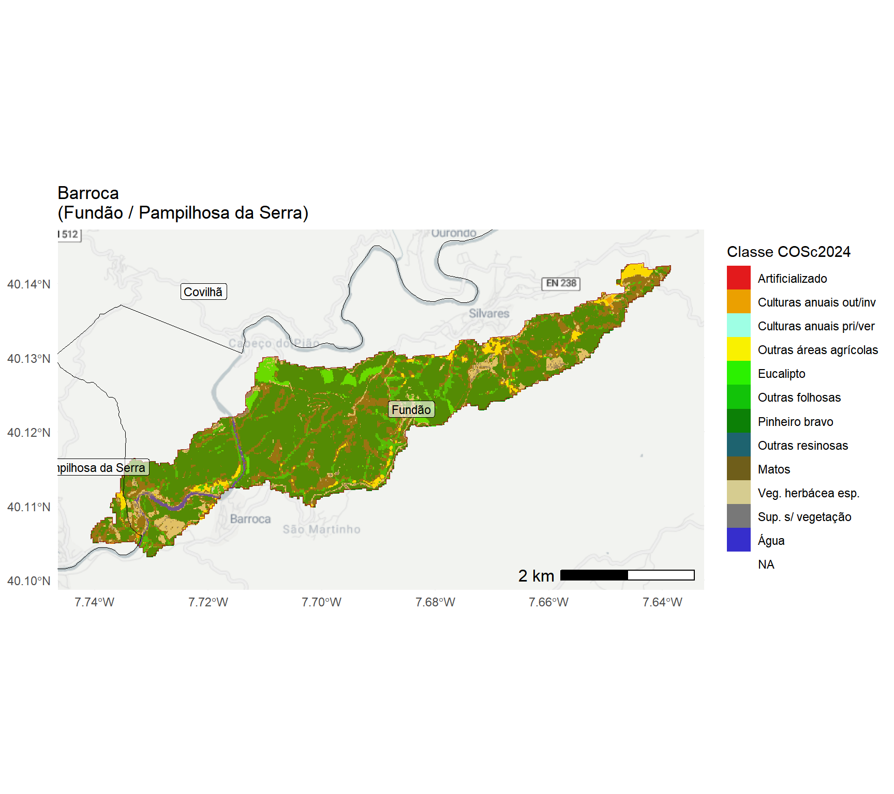
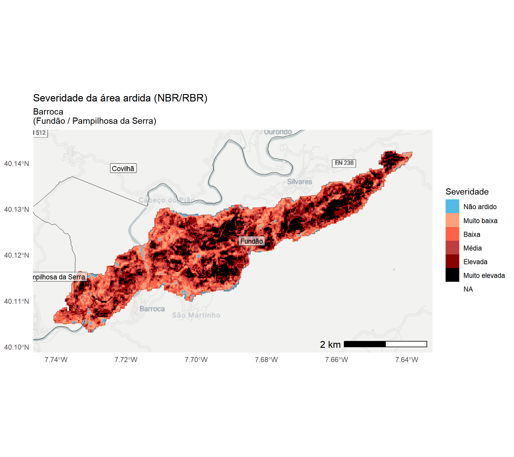
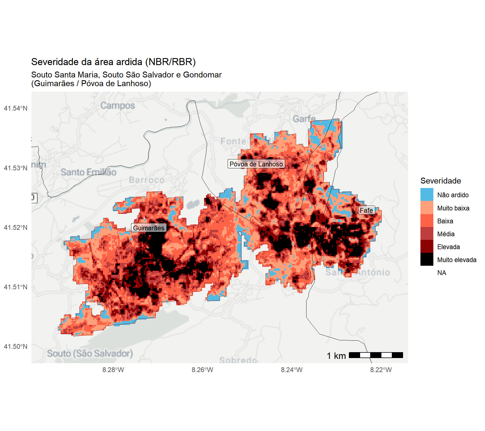
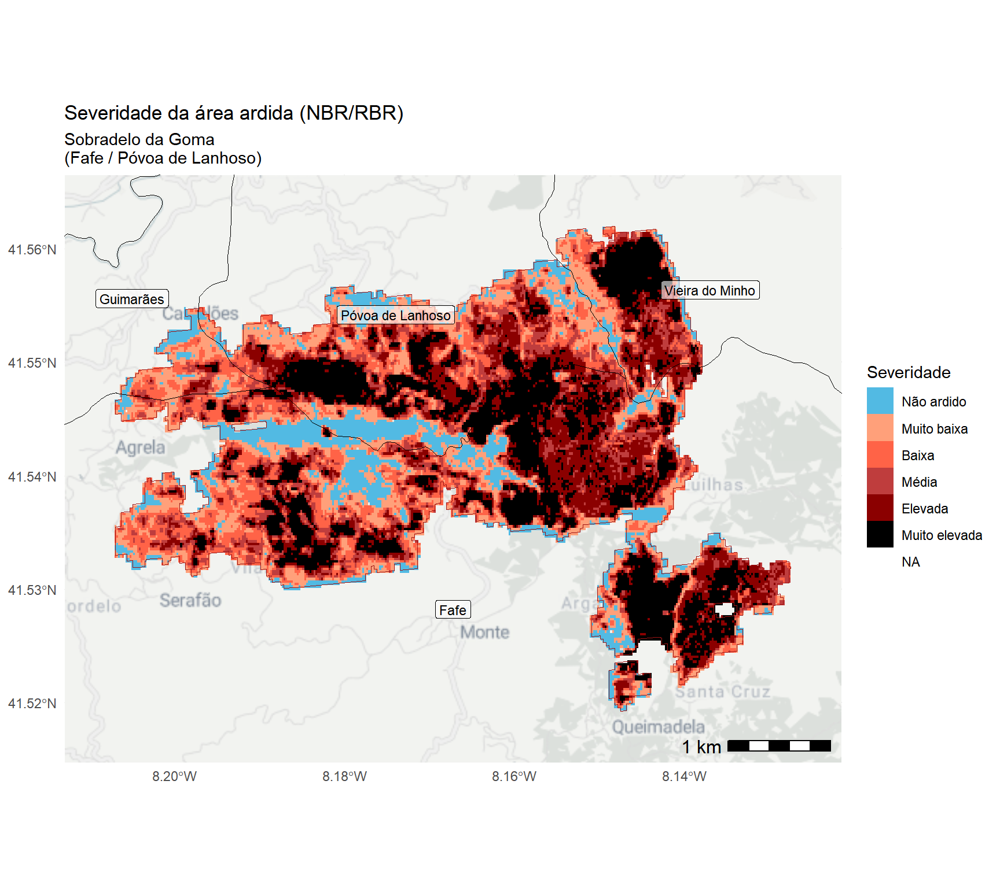
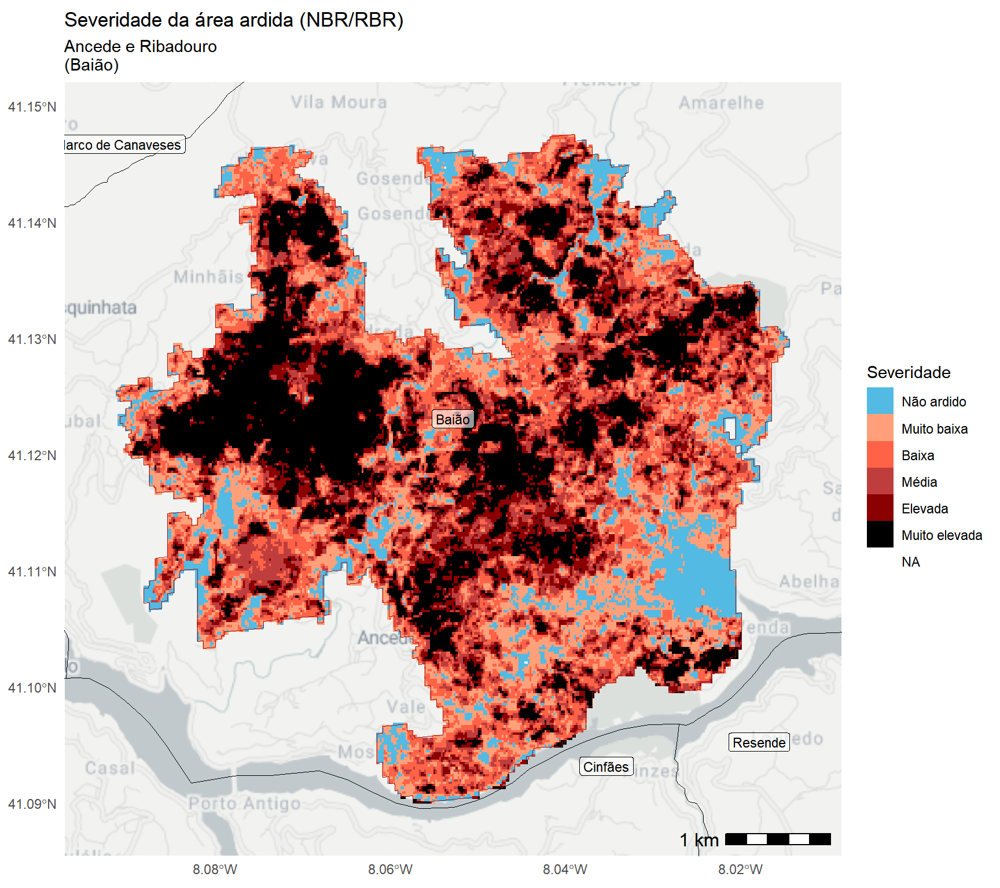
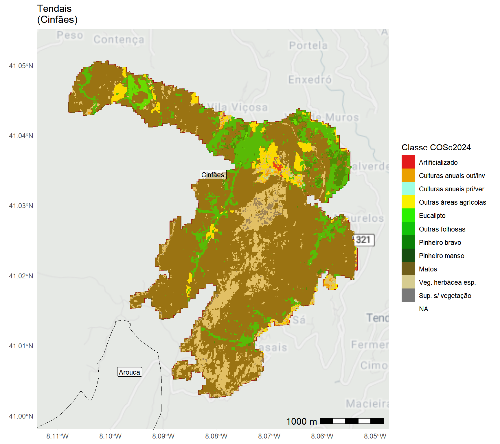

| Classe | Nr. ocorrências | Percentagem 2024 | Nr. ocorrências após 15 set | Percentagem classe |
|---|---|---|---|---|
| 0-10 ha | 384 | 56.8 | 65 | 16.9 |
| 10-100 ha | 210 | 31.1 | 49 | 23.3 |
| 100-250 ha | 29 | 4.3 | 14 | 48.3 |
| 250-500 ha | 17 | 2.5 | 12 | 70.6 |
| 500-1000 ha | 11 | 1.6 | 8 | 72.7 |
| 1000-2500 ha | 12 | 1.8 | 7 | 58.3 |
| 2500-5000 ha | 6 | 0.9 | 5 | 83.3 |
| 5000-10000 ha | 4 | 0.6 | 4 | 100.0 |
| >10000 ha | 3 | 0.4 | 3 | 100.0 |
Análise da área ardida em Portugal continental no ano de 2024
João Gonçalves ![]()
Bruno Marcos
Aviso / Disclaimer
Esta análise é preliminar e reflete os dados a que os autores tiveram acesso à data de criação deste documento. Esta análise não é definitiva e os valores poderão mudar assim que atualizações e modificações dos dados forem disponibilizadas (por razões diversas e fora do controlo dos autores).
Atualizações deste relatório serão disponibilizadas assim que modificações relevantes dos perímetros de área ardida fornecidos pelo Sistema Europeu Copernicus/EFFIS forem disponibilizados.
As fontes de dados podem estar sujeitas a variações temporais e espaciais, imprecisões ou inexatidões de ordem diversa assim como a erros inerentes aos processos de recolha e processamento de informação completamente alheias aos autores.
Os autores deste relatório não assumem qualquer responsabilidade por decisões ou ações tomadas com base nos dados, análises ou conclusões aqui apresentadas sem a devida consideração das limitações mencionadas.
O uso inadequado ou a interpretação incorreta dos resultados, especialmente sem um conhecimento profundo das incertezas associadas, é da inteira responsabilidade de quem os utiliza. Recomenda-se que os resultados apresentados sejam sempre analisados ou interpretados com cautela, e que, se necessário, sejam complementados por outras fontes de informação e validações adicionais.
Info
Se está a ver este relatório em um smartphone ou tablet, experimente rodar o ecrã para o formato horizontal para aceder ao índice de conteúdos (do lado direito do ecrã).
Código fonte das análises
O código R utilizado em formato Quarto usado para produzir estas análises será disponibilizado no endereço: https://github.com/SeverusPT/AnaliseAreaArdida2024
Agradecimentos
Este relatório foi financiado pela Fundação para a Ciência e a Tecnologia (FCT) no âmbito do projeto SeverusPT — “Um serviço e produto de dados baseados na web para a avaliação e previsão de severidade de incêndio em Portugal continental”.
- Website: https://severus.pt/
- DOI: https://doi.org/10.54499/PCIF/RPG/0170/2019
- Referência FCT: PCIF/RPG/0170/2019
1. Material e métodos
1.1. Fontes de dados espaciais/geográficos
Para as análises realizadas neste relatório foram usados os seguintes conjuntos de dados:
Áreas ardidas do Sistema Europeu Copernicus EFFIS (European Forest Fire Information System): link geral | link dados
Carta de Uso e Ocupação do Solo - 2018: link geral | link dados
Carta de Ocupação do Solo Conjuntural - 2024 Pré-Verão DGT: link geral | link dados
Carta Administrativa Oficial de Portugal - CAOP2023 (Continente): link geral | link dados
Rede Nacional de Áreas Protegidas (RNAP): link geral | link dados
Zonas de Proteção Especial da Diretiva Aves (ZPE) - RN2000: link geral | link dados
Zonas Especiais de Conservação / Sítios da Diretiva Habitats (ZEC/SIC) - RN2000: link geral | link dados
Estradas e vias de trânsito - OpenStreetMaps PT: link geral | link dados
Global ML Building Footprints (área/polígonos de edifícios): link geral-1 | link geral-2 | link dados
Rede Hidrográfica – EU-Hydro River Network Database 2006-2012 (NUTS: PT1): link geral | link dados
Dados Censos 2021 - BGRI: Link geral | link dados
1.2. Métodos
Para a quantificação da área ardida, foram realizadas análises espaciais recorrendo a ferramentas de Sistemas de Informação Geográfica (SIG). Estas análises foram desenvolvidas na plataforma de computação RStudio utilizando a linguagem R, permitindo assim integrar, manipular, visualizar e processar grandes volumes de dados geoespaciais. As ferramentas empregadas para este fim incluíram uma combinação de bibliotecas especializadas no tratamento de dados vetoriais e raster, assim como para a geração de gráficos e tabelas.
Para o geoprocessamento e análise de dados vetoriais, foi utilizado o pacote sf, que facilitou o manuseio e a análise de dados espaciais em formato vetorial. Em complemento, os pacotes terra, tidyterra, raster e fasterize foram usados para o geoprocessamento e análise de dados raster, oferecendo funcionalidades robustas para a manipulação de dados em grande escala.
A visualização de dados geoespaciais foi aprimorada com o pacote ggmap, que permitiu a inclusão de basemaps em formato raster. Além disso, o pacote tidyverse foi utilizado para a manipulação, análise e agregação de dados, permitindo uma estrutura de trabalho eficiente para transformar e analisar os dados espaciais.
Para a renderização de gráficos e mapas, os pacotes ggplot2 e patchwork foram aplicados, proporcionando a criação de visualizações detalhadas e a composição de gráficos e mapas. Finalmente, a formatação e renderização de tabelas foi feita através dos pacotes knitr, kableExtra e flextable, garantindo a apresentação dos resultados tabulares.
Todo o fluxo de trabalho visou garantir a precisão e repetibilidade da análise espacial e estatística dos dados, permitindo uma compreensão abrangente das áreas ardidas e a geração de outputs rigorosos e acessíveis para a interpretação dos incêndios no ano de 2024.
2. Área ardida em Portugal continental (2024)
Síntese geral
À data de 27/09/2024 a área ardida no ano de 2024, de acordo com os dados do Sistema Copernicus/EFFIS (European Forest Fire Information System) é igual a 154,906 hectares. De acordo com esta informação, no mês de setembro arderam 145,099 hectares dos quais 131,707 hectares ocorreram após o dia 15 de setembro de 2024 (inclusive; ou seja, correspondente 85% do total anual).
Segundo os dados do EFFIS, foram contabilizados 676 ocorrências de incêndio das quais 167 ocorreram após o dia 15 de setembro (inclusive), correspondente a 24.7% do total anual.
Em termos de afetação potencial de áreas com estatuto de conservação/proteção, um total de 3,908 hectares ocorreram em Rede Nacional de Áreas Protegidas (RNAP), 35,465 hectares em Sítios de Interesse Comunitário da Rede Natura 2000, e 1,477 hectares em Zonas de Proteção Especial também em contexto da Rede Natura 2000.
Em termos de afetação potencial dos cursos de água e, considerando uma estratificação pela hierarquia de Strahler 1, foram quantificados os seguintes impactos em termos de comprimento total por tipo de rio (Strahler 1 a 6):
- Classe 1: 388.9 km
- Classe 2: 125.2 km
- Classe 3: 57.7 km
- Classe 4: 78.4 km
- Classe 5: 22.9 km
- Classe 6: 0.1 km .
De acordo com dados do INE, e considerando as subsecções estatísticas constantes da Base Geográfica de Referenciação de Informação (BGRI) para os Censos de 2021, um total de 136,303 habitantes foram potencialmente afetados pelos incêndios de 2024 (i.e., como indivíduos residentes à data de 2021 dentro ou nas imediações dos perímetros ardidos, com níveis muito diferenciados de impacto e que os dados a que tivemos acesso não permitem estimar). Segundo este conjunto de dados também, um total de 85,245 alojamentos poderão ter sido impactados (com graus de afetação muito diferenciados e que os dados não permitem caracterizar) estando localizados dentro ou nas imediações dos perímetros ardidos.
De acordo com o conjunto de dados aberto de edíficos MS Buildings Footprint, que mistura todas as tipologias de edificado (e.g., habitacional, industrial, serviços), um total de 74,372 edifícios foram potencialmente afetados pelos incêndios de 2024 com níveis muito diferenciados de impacto (que os dados a que tivemos acesso não permitem estimar), estando incluídos dentro dos perímetros de área ardida mapeados pelo sistema EFFIS.
Segundo o conjunto de dados aberto OSM – OpenStreetMap – sobre vias de trânsito/acesso/circulação e, agregando todas as tipologias existentes nesta base de dados (e.g., auto-estradas, estradas nacionais, municipais, caminhos, trilhos), foram potencialmente afetados 6,891 Km de vias.
A distribuição das ocorrências de incêndio por dimensão da área ardida é mostrada na tabela abaixo. Nesta são apresentadas a frequência absoluta e relativa (%) para o ano de 2024. Para efeito de análise mais detalhada, foram separadas as ocorrências na base de dados do EFFIS a partir de 15 de setembro. Neste caso é mostrada a frequência aboluta e relativa (tendo como denominador as ocorrências em cada categoria de dimensão da área ardida).


2.1. Área ardida por classe de uso/coberto do solo
Tendo por base os dados de área ardida foi elaborada uma análise relativamente à distribuição dessa em função das categorias de uso/coberto do solo. Para esse efeito recorreu-se a duas bases de dados de referência para Portugal continental:
Carta de Ocupação do Solo Conjuntural para o ano de 2024 (COSc 2024, período pré-verão; Fonte: DGT) e a,
Carta de Uso e Ocupação do Solo (COS 2018; Fonte: DGT).
No primeiro conjunto de dados – COSc 2024 – procurou-se a elevada atualidade desta base de dados para efeito da compreensão das categorias mais afetadas pelos incêndios. Enquanto que para a COS 2018 buscou-se uma complementaridade das fontes de informação, assim como maior resolução temática deste conjunto de dados (i.e., maior número de categorias e, portanto, maior grau de discriminação dos tipos de uso/coberto do solo).
Os resultados desta análise são apresentados nas subsecções seguintes tendo por base cada um destes datasets de uso/ocupação do solo.
2.1.1. Carta de Uso e Ocupação do Solo conjuntural - COSc 2024 (pré-verão)
| Código | Classe uso/coberto | Área ardida (ha) | % ardida |
|---|---|---|---|
| 410 | Matos | 55821.8 | 36.2 |
| 312 | Eucalipto | 36639.0 | 23.7 |
| 420 | Veg. herbácea esp. | 18162.8 | 11.8 |
| 313 | Outras folhosas | 13460.8 | 8.7 |
| 321 | Pinheiro bravo | 11726.5 | 7.6 |
| 213 | Outras áreas agrícolas | 9852.7 | 6.4 |
| 500 | Sup. s/ vegetação | 3913.2 | 2.5 |
| 100 | Artificializado | 1621.5 | 1.1 |
| 211 | Culturas anuais out/inv | 1294.3 | 0.8 |
| 212 | Culturas anuais pri/ver | 988.0 | 0.6 |
| 323 | Outras resinosas | 295.3 | 0.2 |
| 311 | Sobreiro e azinheira | 205.8 | 0.1 |
| 620 | Água | 145.9 | 0.1 |
| 322 | Pinheiro manso | 104.2 | 0.1 |
| 610 | Zonas húmidas | 21.0 | 0.0 |

2.1.2. Carta de Ocupação do Solo - COS 2018 (v2)
| Classe uso/coberto | Área ardida (ha) | % ardida |
|---|---|---|
| Matos | 42207.0 | 27.2 |
| Florestas de eucalipto | 41794.1 | 27.0 |
| Florestas de pinheiro bravo | 29304.4 | 18.9 |
| Culturas temporárias de sequeiro e regadio | 8172.8 | 5.3 |
| Florestas de outras folhosas | 8124.6 | 5.2 |
| Florestas de outros carvalhos | 6125.3 | 4.0 |
| Mosaicos culturais e parcelares complexos | 3286.8 | 2.1 |
| Agricultura com espaços naturais e seminaturais | 2263.5 | 1.5 |
| Vegetação esparsa | 2099.6 | 1.4 |

3. Área ardida por município
Nesta secção do relatório, será realizada uma análise detalhada das áreas ardidas no ano de 2024, com enfoque nos municípios de Portugal continental. O objetivo desta análise é avaliar a distribuição das áreas afetadas pelos incêndios, proporcionando uma visão objetiva sobre a extensão dos danos em cada município.
| Município | Área ardida 2024 (hectares) | % área do concelho |
|---|---|---|
| Castro Daire | 18397.2 | 48.5 |
| São Pedro do Sul | 10755.6 | 30.8 |
| Albergaria-a-Velha | 9733.1 | 61.3 |
| Águeda | 9091.5 | 27.1 |
| Baião | 6871.1 | 39.4 |
| Arouca | 6267.8 | 19.0 |
| Sever do Vouga | 5768.5 | 44.4 |
| Vila Pouca de Aguiar | 5661.3 | 13.0 |
| Mangualde | 5656.5 | 25.8 |
| Penalva do Castelo | 5588.7 | 41.6 |
| Carregal do Sal | 5349.7 | 45.8 |
| Cabeceiras de Basto | 4346.8 | 18.0 |
| Amarante | 4213.5 | 14.0 |
| Cinfães | 4207.8 | 17.6 |
| Marco de Canaveses | 3890.2 | 19.3 |
| Fafe | 3160.0 | 14.4 |
| Nelas | 3042.9 | 24.2 |
| Gondomar | 3027.4 | 22.9 |
| Arcos de Valdevez | 2674.4 | 6.0 |
| Resende | 2410.8 | 19.5 |
| Póvoa de Lanhoso | 2200.9 | 16.3 |
| Celorico de Basto | 2078.8 | 11.5 |
| Chaves | 2011.7 | 3.4 |
| Oliveira de Azeméis | 1977.4 | 12.3 |
| Penafiel | 1888.4 | 8.9 |
| Paredes | 1706.3 | 10.9 |
| Miranda do Douro | 1631.0 | 3.3 |
| Vila Nova de Paiva | 1522.5 | 8.7 |
| Vila Real | 1235.4 | 3.3 |
| Ribeira de Pena | 1005.6 | 4.6 |
| Guimarães | 995.2 | 4.1 |
| Fundão | 985.4 | 1.4 |
| Vinhais | 944.4 | 1.4 |
| Tábua | 806.9 | 4.0 |
| Valença | 691.2 | 5.9 |
| Sesimbra | 620.4 | 3.2 |
| Felgueiras | 605.7 | 5.2 |
| Peso da Régua | 590.3 | 6.2 |
| Melgaço | 574.2 | 2.4 |
| Lamego | 547.0 | 3.3 |
| Vimioso | 537.8 | 1.1 |
| Vale de Cambra | 529.1 | 3.6 |
| Vieira do Minho | 505.7 | 2.3 |
| Oliveira do Hospital | 480.5 | 2.0 |
| Bragança | 479.6 | 0.4 |
| Vila Verde | 473.1 | 2.1 |
| Santo Tirso | 467.3 | 3.4 |
| Montalegre | 411.0 | 0.5 |
| Ponte da Barca | 400.9 | 2.2 |
| Castelo Branco | 400.2 | 0.3 |
| Alijó | 319.8 | 1.1 |
| Paços de Ferreira | 311.1 | 4.4 |
| Terras de Bouro | 310.2 | 1.1 |
| Arganil | 271.0 | 0.8 |
| Seixal | 246.4 | 2.6 |
| Ponte de Lima | 233.0 | 0.7 |
| Freixo de Espada à Cinta | 227.9 | 0.9 |
| Mirandela | 197.5 | 0.3 |
| São João da Pesqueira | 189.1 | 0.7 |
| Aveiro | 175.5 | 0.9 |
| Sátão | 169.9 | 0.8 |
| Fornos de Algodres | 162.0 | 1.2 |
| Celorico da Beira | 157.8 | 0.6 |
| Lousada | 156.9 | 1.6 |
| Portalegre | 147.3 | 0.3 |
| Viana do Castelo | 145.5 | 0.5 |
| Seia | 141.4 | 0.3 |
| Ourém | 133.0 | 0.3 |
| Braga | 113.5 | 0.6 |
| Tarouca | 113.5 | 1.1 |
| Vila Nova de Famalicão | 107.3 | 0.5 |
| Paredes de Coura | 99.1 | 0.7 |
| Pombal | 98.9 | 0.2 |
| Cascais | 94.8 | 1.0 |
| Barcelos | 93.5 | 0.2 |
| Vila Flor | 85.7 | 0.3 |
| Gouveia | 65.8 | 0.2 |
| Tabuaço | 61.9 | 0.5 |
| Boticas | 58.8 | 0.2 |
| Alcácer do Sal | 55.0 | 0.0 |


4. Área ardida em espaços de proteção/conservação
Nesta secção será apresentada uma análise da área ardida em espaços de proteção e conservação em Portugal continental, abordando as diferentes redes e áreas de interesse. Esta análise está subdividida em três partes principais:
A primeira subsecção (4.1) incidirá sobre a Rede Nacional de Áreas Protegidas (RNAP), explorando a extensão dos incêndios em territórios que possuem um elevado valor ecológico, património natural e biodiversidade;
Na subsecção (4.2), será analisada a área ardida nos Sítios de Interesse Comunitário (SIC), integrados na Rede Natura 2000, com especial enfoque nos impactos sobre os habitats naturais protegidos;
Por fim, a subsecção (4.3) examinará as Zonas de Proteção Especial (ZPE), também parte da Rede Natura 2000, discutindo as áreas afetadas em locais designados para a conservação de aves e outras espécies prioritárias.
Esta análise visa avaliar os impactos dos incêndios nas áreas de maior relevância patrimonial e a necessidade de medidas de recuperação e prevenção nesses espaços.
4.1. Rede Nacional de Áreas Protegidas (RNAP)
| Sigla | Nome AP | Área ardida (ha) | % AP ardida |
|---|---|---|---|
| PPRPSP | Parque das Serras do Porto | 2315.5 | 38.8 |
| PNPG | Peneda-Gerês | 641.2 | 0.9 |
| PNM | Montesinho | 474.7 | 0.6 |
| PNDI | Douro Internacional | 227.9 | 0.3 |
| PNSE | Serra da Estrela | 98.8 | 0.1 |
| PNSC | Sintra-Cascais | 94.8 | 0.7 |
| PNRVT | Vale do Tua | 31.5 | 0.1 |
| PNAL | Alvão | 9.6 | 0.1 |
| PPLSSA | Serras do Socorro e Archeira | 7.6 | 0.6 |
| PNSAC | Serras de Aire e Candeeiros | 5.5 | 0.0 |
| RNDSJ | Dunas de São Jacinto | 0.5 | 0.1 |
4.2. Rede Natura 2000 - Sítios de Interesse Comunitário (SIC)
| Código SIC | Nome SIC | Área ardida (ha) | % sítio ardido |
|---|---|---|---|
| PTCON0025 | Montemuro | 9942.3 | 25.7 |
| PTCON0003 | Alvão/Marão | 6951.4 | 11.8 |
| PTCON0059 | Rio Paiva | 6264.3 | 43.2 |
| PTCON0047 | Serras da Freita e Arada | 5473.6 | 19.1 |
| PTCON0026 | Rio Vouga | 2105.3 | 75.3 |
| PTCON0027 | Carregal do Sal | 1736.2 | 18.3 |
| PTCON0001 | Peneda-Gerês | 1188.0 | 1.3 |
| PTCON0054 | Fernão Ferro/Lagoa de Albufeira | 846.6 | 19.6 |
| PTCON0002 | Montesinho/Nogueira | 486.8 | 0.5 |
| PTCON0039 | Serra d'Arga | 105.0 | 2.3 |
| PTCON0014 | Serra da Estrela | 98.8 | 0.1 |
| PTCON0008 | Sintra/Cascais | 94.8 | 0.6 |
| PTCON0053 | Moura/Barrancos | 45.9 | 0.1 |
| PTCON0061 | Ria de Aveiro | 29.5 | 0.1 |
| PTCON0060 | Serra da Lousã | 28.5 | 0.2 |
| PTCON0021 | Rios Sabor e Maçãs | 19.2 | 0.1 |
| PTCON0024 | Valongo | 17.2 | 0.7 |
| PTCON0015 | Serras de Aire e Candeeiros | 16.0 | 0.0 |
| PTCON0040 | Corno do Bico | 7.7 | 0.1 |
| PTCON0007 | São Mamede | 2.8 | 0.0 |
| PTCON0022 | Douro Internacional | 2.3 | 0.0 |
| PTCON0020 | Rio Lima | 1.9 | 0.0 |
| PTCON0037 | Monchique | 0.8 | 0.0 |
4.3. Rede Natura 2000 - Zonas de Proteção Especial (ZPE)
| Código ZPE | Nome ZPE | Área ardida (ha) | % sítio ardido |
|---|---|---|---|
| PTZPE0002 | Serra do Geres | 639.4 | 1.0 |
| PTZPE0003 | Montesinho/Nogueira | 487.2 | 0.5 |
| PTZPE0038 | Douro Internacional e Vale do Rio Águeda | 227.9 | 0.2 |
| PTZPE0045 | Mourão/Moura/Barrancos | 45.9 | 0.1 |
| PTZPE0004 | Ria de Aveiro | 28.0 | 0.1 |
| PTZPE0037 | Rios Sabor e Maçãs | 19.2 | 0.0 |
| PTZPE0049 | Lagoa Pequena | 15.5 | 22.6 |
| PTZPE0039 | Vale do Côa | 13.6 | 0.1 |
| PTCON0037 | Monchique | 0.8 | 0.0 |
5. Análise de grandes áreas ardidas
Neste secção procedeu-se à caracterização das grandes áreas ardidas com dimensão superior a 1000 hectares, analisando a distribuição dos usos / coberto do solo em cada uma dessas áreas. Esta análise visa identificar a tipologia dos espaços afetados, distinguindo entre diferentes categorias de uso, como florestas, matos, áreas agrícolas, áreas agroflorestais e espaços urbanos.
5.1. Ribeira de Fráguas (Albergaria-a-Velha / Oliveira de Azeméis)

Total área ardida (Fonte: EFFIS): 6,535 hectares
Data/hora do fogo: 2024-09-15 14:31:00
Área ardida em RNAP (Fonte: ICNF): 0 hectares
Área ardida em SICs/ Rede Natura 2000: 0 hectares
Área ardida em ZPEs/ Rede Natura 2000: 0 hectares
Número de residentes/indivíduos potencialmente afetados (Fonte: INE): 6,557
Número de alojamentos potencialmente afetados: 3,465
Número de edifícios potencialmente afetados (Fonte: MS Buildings Footprint): 4,673
Área ardida por município
Municipio | Area_ha | Percentagem |
|---|---|---|
Albergaria-a-Velha | 3,430.1 | 52.5 |
Oliveira de Azeméis | 1,639.7 | 25.1 |
Sever do Vouga | 963.4 | 14.7 |
Vale de Cambra | 505.4 | 7.7 |
Área ardida por classe de uso/coberto do solo (COSc 2024, DGT)
Classe COSc2024 | Area_ha | Percentagem |
|---|---|---|
Eucalipto | 4,622.9 | 73.4 |
Veg. herbácea esp. | 494.3 | 7.8 |
Matos | 308.6 | 4.9 |
Outras folhosas | 252.1 | 4.0 |
Outras áreas agrícolas | 248.7 | 3.9 |
Sup. s/ vegetação | 122.6 | 1.9 |
Artificializado | 108.0 | 1.7 |
Pinheiro bravo | 97.6 | 1.5 |
Culturas anuais pri/ver | 25.4 | 0.4 |
Culturas anuais out/inv | 18.0 | 0.3 |
Pinheiro manso | 1.3 | 0.0 |
Outras resinosas | 0.1 | 0.0 |
Área ardida por classe de uso/coberto do solo (COS 2018, DGT)
Classe_COS2018 | Area_ha | Percentagem |
|---|---|---|
Florestas de eucalipto | 5,474.9 | 83.7 |
Culturas temporárias de sequeiro e | 256.7 | 3.9 |
Florestas de outras folhosas | 210.9 | 3.2 |
Tecido edificado descontínuo | 151.3 | 2.3 |
Florestas de pinheiro bravo | 126.6 | 1.9 |
Tecido edificado descontínuo | 71.4 | 1.1 |
Agricultura com espaços naturais e | 62.2 | 1.0 |
Florestas de outros carvalhos | 45.5 | 0.7 |
Indústria | 45.2 | 0.7 |
Mosaicos culturais e parcelares | 41.9 | 0.6 |
Pedreiras | 8.5 | 0.1 |
Espaços vazios sem construção | 6.5 | 0.1 |
Cursos de água naturais | 6.2 | 0.1 |
Instalações desportivas | 4.5 | 0.1 |
Tecido edificado contínuo | 4.2 | 0.1 |
Pomares | 3.9 | 0.1 |
Outros equipamentos e instalações | 3.9 | 0.1 |
Florestas de espécies invasoras | 3.6 | 0.1 |
Florestas de castanheiro | 2.8 | 0.0 |
Culturas temporárias e/ou | 2.4 | 0.0 |
Vinhas | 1.9 | 0.0 |
Matos | 1.8 | 0.0 |
Infraestruturas de tratamento de | 1.1 | 0.0 |
Parques e jardins | 0.5 | 0.0 |
Áreas em construção | 0.1 | 0.0 |
Afetação potencial de rios e ribeiros (fonte: EU-Hydro River Network Database)
Ordem_Strahler | Comprimento_Km |
|---|---|
1 | 16.0 |
2 | 7.6 |
3 | 12.3 |
Afetação potencial de estradas e caminhos (fonte: OpenStreetMap)
TipoOSM | Tipo | Comprimento_Km | Percentagem |
|---|---|---|---|
track | caminho agrícola/florestal | 182.6 | 52.8 |
residential | estrada residencial | 53.9 | 15.6 |
tertiary | estrada terciária | 48.4 | 14.0 |
unclassified | estrada não classificada | 25.1 | 7.3 |
path | trilho | 15.3 | 4.4 |
service | via de serviço | 6.4 | 1.8 |
track_grade3 | caminho_nível3 | 3.3 | 0.9 |
secondary | estrada secundária | 3.1 | 0.9 |
footway | passeio | 2.9 | 0.8 |
primary | estrada primária | 2.9 | 0.8 |
track_grade4 | caminho_nível4 | 0.7 | 0.2 |
track_grade2 | caminho_nível2 | 0.6 | 0.2 |
pedestrian | 0.6 | 0.2 | |
steps | 0.1 | 0.0 |
5.2. São Martinho de Angueira (Miranda do Douro / Vimioso)

Total área ardida (Fonte: EFFIS): 1,625 hectares
Data/hora do fogo: 2024-08-11 01:09:00
Área ardida em RNAP (Fonte: ICNF): 0 hectares
Área ardida em SICs/ Rede Natura 2000: 0 hectares
Área ardida em ZPEs/ Rede Natura 2000: 0 hectares
Número de residentes/indivíduos potencialmente afetados (Fonte: INE): 60
Número de alojamentos potencialmente afetados: 81
Número de edifícios potencialmente afetados (Fonte: MS Buildings Footprint): 109
Área ardida por município
Municipio | Area_ha | Percentagem |
|---|---|---|
Miranda do Douro | 1,279.0 | 78.6 |
Vimioso | 349.1 | 21.4 |
Área ardida por classe de uso/coberto do solo (COSc 2024, DGT)
Classe COSc2024 | Area_ha | Percentagem |
|---|---|---|
Matos | 745.6 | 45.8 |
Outras folhosas | 241.0 | 14.8 |
Outras áreas agrícolas | 186.0 | 11.4 |
Veg. herbácea esp. | 185.6 | 11.4 |
Pinheiro bravo | 123.9 | 7.6 |
Sup. s/ vegetação | 63.1 | 3.9 |
Culturas anuais out/inv | 57.1 | 3.5 |
Outras resinosas | 16.4 | 1.0 |
Culturas anuais pri/ver | 8.2 | 0.5 |
Artificializado | 1.3 | 0.1 |
Área ardida por classe de uso/coberto do solo (COS 2018, DGT)
Classe_COS2018 | Area_ha | Percentagem |
|---|---|---|
Matos | 498.7 | 30.6 |
Florestas de pinheiro bravo | 299.3 | 18.4 |
Florestas de outros carvalhos | 253.3 | 15.6 |
Culturas temporárias de sequeiro e | 162.5 | 10.0 |
Pomares | 135.0 | 8.3 |
Agricultura com espaços naturais e | 82.2 | 5.0 |
Florestas de outras folhosas | 69.6 | 4.3 |
Florestas de castanheiro | 52.1 | 3.2 |
Pastagens espontâneas | 39.0 | 2.4 |
Pastagens melhoradas | 18.0 | 1.1 |
Mosaicos culturais e parcelares | 10.2 | 0.6 |
Florestas de outras resinosas | 4.1 | 0.2 |
Olivais | 1.9 | 0.1 |
Tecido edificado contínuo | 1.8 | 0.1 |
Vinhas | 0.2 | 0.0 |
SAF de outros carvalhos | 0.1 | 0.0 |
Afetação potencial de rios e ribeiros (fonte: EU-Hydro River Network Database)
Ordem_Strahler | Comprimento_Km |
|---|---|
1 | 5.2 |
2 | 0.2 |
3 | 2.3 |
Afetação potencial de estradas e caminhos (fonte: OpenStreetMap)
TipoOSM | Tipo | Comprimento_Km | Percentagem |
|---|---|---|---|
track | caminho agrícola/florestal | 60.0 | 72.7 |
track_grade4 | caminho_nível4 | 6.7 | 8.2 |
path | trilho | 5.3 | 6.5 |
tertiary | estrada terciária | 4.7 | 5.7 |
track_grade3 | caminho_nível3 | 3.0 | 3.7 |
track_grade5 | caminho_nível5 | 1.3 | 1.6 |
track_grade2 | caminho_nível2 | 0.7 | 0.8 |
residential | estrada residencial | 0.6 | 0.7 |
unclassified | estrada não classificada | 0.2 | 0.2 |
5.3. São Jorge e Ermelo (Arcos de Valdevez)

Total área ardida (Fonte: EFFIS): 1,264 hectares
Data/hora do fogo: 2024-09-04 01:34:00
Área ardida em RNAP (Fonte: ICNF): 0 hectares
Área ardida em SICs/ Rede Natura 2000: 0 hectares
Área ardida em ZPEs/ Rede Natura 2000: 7 hectares
Número de residentes/indivíduos potencialmente afetados (Fonte: INE): 93
Número de alojamentos potencialmente afetados: 160
Número de edifícios potencialmente afetados (Fonte: MS Buildings Footprint): 22
Área ardida por município
Municipio | Area_ha | Percentagem |
|---|---|---|
Arcos de Valdevez | 1,265.5 | 100 |
Área ardida por classe de uso/coberto do solo (COSc 2024, DGT)
Classe COSc2024 | Area_ha | Percentagem |
|---|---|---|
Matos | 1,155.7 | 91.3 |
Veg. herbácea esp. | 82.2 | 6.5 |
Outras folhosas | 16.1 | 1.3 |
Eucalipto | 7.6 | 0.6 |
Pinheiro bravo | 1.8 | 0.1 |
Sup. s/ vegetação | 0.7 | 0.1 |
Culturas anuais pri/ver | 0.6 | 0.1 |
Outras resinosas | 0.4 | 0.0 |
Outras áreas agrícolas | 0.2 | 0.0 |
Artificializado | 0.0 | 0.0 |
Área ardida por classe de uso/coberto do solo (COS 2018, DGT)
Classe_COS2018 | Area_ha | Percentagem |
|---|---|---|
Matos | 1,176.9 | 93.0 |
Florestas de outros carvalhos | 42.9 | 3.4 |
Florestas de outras folhosas | 17.9 | 1.4 |
Florestas de pinheiro bravo | 17.8 | 1.4 |
Florestas de eucalipto | 7.8 | 0.6 |
Culturas temporárias de sequeiro e | 1.8 | 0.1 |
Tecido edificado descontínuo | 0.5 | 0.0 |
Agricultura com espaços naturais e | 0.0 | 0.0 |
Afetação potencial de rios e ribeiros (fonte: EU-Hydro River Network Database)
Ordem_Strahler | Comprimento_Km |
|---|
Afetação potencial de estradas e caminhos (fonte: OpenStreetMap)
TipoOSM | Tipo | Comprimento_Km | Percentagem |
|---|---|---|---|
track | caminho agrícola/florestal | 21.2 | 76.0 |
path | trilho | 3.6 | 12.8 |
tertiary | estrada terciária | 3.1 | 11.1 |
residential | estrada residencial | 0.0 | 0.1 |
5.4. Souto Santa Maria, Souto São Salvador e Gondomar (Guimarães / Póvoa de Lanhoso)

Total área ardida (Fonte: EFFIS): 1,114 hectares
Data/hora do fogo: 2024-09-13 02:06:00
Área ardida em RNAP (Fonte: ICNF): 0 hectares
Área ardida em SICs/ Rede Natura 2000: 0 hectares
Área ardida em ZPEs/ Rede Natura 2000: 0 hectares
Número de residentes/indivíduos potencialmente afetados (Fonte: INE): 1,696
Número de alojamentos potencialmente afetados: 892
Número de edifícios potencialmente afetados (Fonte: MS Buildings Footprint): 284
Área ardida por município
Municipio | Area_ha | Percentagem |
|---|---|---|
Guimarães | 767.4 | 68.9 |
Póvoa de Lanhoso | 209.9 | 18.8 |
Fafe | 137.2 | 12.3 |
Área ardida por classe de uso/coberto do solo (COSc 2024, DGT)
Classe COSc2024 | Area_ha | Percentagem |
|---|---|---|
Eucalipto | 605.5 | 54.3 |
Matos | 307.7 | 27.6 |
Outras folhosas | 78.0 | 7.0 |
Veg. herbácea esp. | 51.0 | 4.6 |
Sup. s/ vegetação | 37.8 | 3.4 |
Outras áreas agrícolas | 18.2 | 1.6 |
Pinheiro bravo | 11.3 | 1.0 |
Artificializado | 3.7 | 0.3 |
Culturas anuais out/inv | 0.7 | 0.1 |
Culturas anuais pri/ver | 0.3 | 0.0 |
Área ardida por classe de uso/coberto do solo (COS 2018, DGT)
Classe_COS2018 | Area_ha | Percentagem |
|---|---|---|
Florestas de eucalipto | 701.5 | 62.9 |
Matos | 298.2 | 26.8 |
Pedreiras | 38.9 | 3.5 |
Florestas de outras folhosas | 20.2 | 1.8 |
Agricultura com espaços naturais e | 15.1 | 1.4 |
Tecido edificado descontínuo | 7.5 | 0.7 |
Mosaicos culturais e parcelares | 7.3 | 0.7 |
Aterros | 7.1 | 0.6 |
Tecido edificado descontínuo | 4.5 | 0.4 |
Culturas temporárias de sequeiro e | 3.3 | 0.3 |
Florestas de outros carvalhos | 2.9 | 0.3 |
Vinhas | 1.7 | 0.2 |
Instalações agrícolas | 1.6 | 0.1 |
Florestas de pinheiro bravo | 1.5 | 0.1 |
Lixeiras e Sucatas | 1.1 | 0.1 |
Tecido edificado contínuo | 0.9 | 0.1 |
Pomares | 0.8 | 0.1 |
Florestas de espécies invasoras | 0.4 | 0.0 |
Afetação potencial de rios e ribeiros (fonte: EU-Hydro River Network Database)
Ordem_Strahler | Comprimento_Km |
|---|---|
1 | 0.1 |
Afetação potencial de estradas e caminhos (fonte: OpenStreetMap)
TipoOSM | Tipo | Comprimento_Km | Percentagem |
|---|---|---|---|
track | caminho agrícola/florestal | 8.4 | 32.8 |
path | trilho | 4.7 | 18.2 |
tertiary | estrada terciária | 4.5 | 17.7 |
residential | estrada residencial | 3.8 | 14.8 |
primary | estrada primária | 2.9 | 11.2 |
unclassified | estrada não classificada | 1.4 | 5.3 |
5.5. Paus (Resende / Lamego)

Total área ardida (Fonte: EFFIS): 1,702 hectares
Data/hora do fogo: 2024-09-17 01:15:00
Área ardida em RNAP (Fonte: ICNF): 0 hectares
Área ardida em SICs/ Rede Natura 2000: 1,138 hectares
Área ardida em ZPEs/ Rede Natura 2000: 0 hectares
Número de residentes/indivíduos potencialmente afetados (Fonte: INE): 237
Número de alojamentos potencialmente afetados: 247
Número de edifícios potencialmente afetados (Fonte: MS Buildings Footprint): 109
Área ardida por município
Municipio | Area_ha | Percentagem |
|---|---|---|
Resende | 1,155.8 | 67.9 |
Lamego | 547.0 | 32.1 |
Área ardida por classe de uso/coberto do solo (COSc 2024, DGT)
Classe COSc2024 | Area_ha | Percentagem |
|---|---|---|
Matos | 1,220.3 | 71.7 |
Veg. herbácea esp. | 212.8 | 12.5 |
Outras folhosas | 97.8 | 5.7 |
Outras áreas agrícolas | 85.9 | 5.0 |
Eucalipto | 33.3 | 2.0 |
Pinheiro bravo | 31.8 | 1.9 |
Sup. s/ vegetação | 14.6 | 0.9 |
Culturas anuais out/inv | 2.3 | 0.1 |
Artificializado | 0.5 | 0.0 |
Outras resinosas | 0.1 | 0.0 |
Culturas anuais pri/ver | 0.1 | 0.0 |
Área ardida por classe de uso/coberto do solo (COS 2018, DGT)
Classe_COS2018 | Area_ha | Percentagem |
|---|---|---|
Matos | 1,252.3 | 73.5 |
Florestas de pinheiro bravo | 139.6 | 8.2 |
Florestas de outros carvalhos | 82.3 | 4.8 |
Pomares | 54.9 | 3.2 |
Agricultura com espaços naturais e | 50.4 | 3.0 |
Florestas de eucalipto | 32.3 | 1.9 |
Florestas de castanheiro | 21.0 | 1.2 |
Pastagens espontâneas | 19.7 | 1.2 |
Florestas de outras folhosas | 15.2 | 0.9 |
Culturas temporárias de sequeiro e | 14.3 | 0.8 |
Vegetação esparsa | 5.4 | 0.3 |
Pastagens melhoradas | 5.2 | 0.3 |
Albufeiras de barragens | 4.9 | 0.3 |
Mosaicos culturais e parcelares | 2.6 | 0.2 |
Olivais | 1.0 | 0.1 |
Tecido edificado descontínuo | 0.7 | 0.0 |
Tecido edificado contínuo | 0.6 | 0.0 |
Vinhas | 0.1 | 0.0 |
Afetação potencial de rios e ribeiros (fonte: EU-Hydro River Network Database)
Ordem_Strahler | Comprimento_Km |
|---|---|
1 | 2.7 |
Afetação potencial de estradas e caminhos (fonte: OpenStreetMap)
TipoOSM | Tipo | Comprimento_Km | Percentagem |
|---|---|---|---|
track | caminho agrícola/florestal | 18.2 | 68.6 |
path | trilho | 5.9 | 22.4 |
unclassified | estrada não classificada | 1.6 | 6.0 |
residential | estrada residencial | 0.7 | 2.6 |
service | via de serviço | 0.1 | 0.3 |
tertiary | estrada terciária | 0.0 | 0.1 |
5.6. Barroca (Fundão / Pampilhosa da Serra)

Total área ardida (Fonte: EFFIS): 1,014 hectares
Data/hora do fogo: 2024-09-13 12:38:00
Área ardida em RNAP (Fonte: ICNF): 0 hectares
Área ardida em SICs/ Rede Natura 2000: 0 hectares
Área ardida em ZPEs/ Rede Natura 2000: 0 hectares
Número de residentes/indivíduos potencialmente afetados (Fonte: INE): 313
Número de alojamentos potencialmente afetados: 246
Número de edifícios potencialmente afetados (Fonte: MS Buildings Footprint): 86
Área ardida por município
Municipio | Area_ha | Percentagem |
|---|---|---|
Fundão | 985.4 | 97.1 |
Pampilhosa da Serra | 29.6 | 2.9 |
Área ardida por classe de uso/coberto do solo (COSc 2024, DGT)
Classe COSc2024 | Area_ha | Percentagem |
|---|---|---|
Pinheiro bravo | 616.3 | 60.7 |
Matos | 192.9 | 19.0 |
Veg. herbácea esp. | 62.4 | 6.2 |
Outras folhosas | 50.9 | 5.0 |
Eucalipto | 33.5 | 3.3 |
Outras áreas agrícolas | 33.2 | 3.3 |
Sup. s/ vegetação | 13.9 | 1.4 |
Culturas anuais out/inv | 2.1 | 0.2 |
Culturas anuais pri/ver | 0.3 | 0.0 |
Artificializado | 0.1 | 0.0 |
Outras resinosas | 0.0 | 0.0 |
Área ardida por classe de uso/coberto do solo (COS 2018, DGT)
Classe_COS2018 | Area_ha | Percentagem |
|---|---|---|
Florestas de pinheiro bravo | 773.5 | 76.2 |
Matos | 79.7 | 7.9 |
Olivais | 35.5 | 3.5 |
Florestas de outras folhosas | 34.7 | 3.4 |
Florestas de eucalipto | 26.1 | 2.6 |
Agricultura com espaços naturais e | 16.0 | 1.6 |
Cursos de água naturais | 16.0 | 1.6 |
Culturas temporárias de sequeiro e | 10.5 | 1.0 |
Mosaicos culturais e parcelares | 7.3 | 0.7 |
Pomares | 7.2 | 0.7 |
Culturas temporárias e/ou | 3.1 | 0.3 |
Pastagens espontâneas | 2.1 | 0.2 |
Florestas de espécies invasoras | 1.4 | 0.1 |
Pedreiras | 1.3 | 0.1 |
Tecido edificado descontínuo | 0.6 | 0.1 |
Tecido edificado contínuo | 0.1 | 0.0 |
Vinhas | 0.0 | 0.0 |
Afetação potencial de rios e ribeiros (fonte: EU-Hydro River Network Database)
Ordem_Strahler | Comprimento_Km |
|---|---|
1 | 3.9 |
2 | 1.1 |
5 | 3.4 |
Afetação potencial de estradas e caminhos (fonte: OpenStreetMap)
TipoOSM | Tipo | Comprimento_Km | Percentagem |
|---|---|---|---|
track | caminho agrícola/florestal | 45.0 | 84.1 |
primary | estrada primária | 4.3 | 8.0 |
path | trilho | 1.5 | 2.8 |
tertiary | estrada terciária | 1.5 | 2.8 |
unclassified | estrada não classificada | 1.0 | 1.9 |
residential | estrada residencial | 0.1 | 0.2 |
footway | passeio | 0.1 | 0.1 |
steps | 0.0 | 0.0 |
5.7. Tendais (Cinfães)

Total área ardida (Fonte: EFFIS): 1,038 hectares
Data/hora do fogo: 2024-09-16 01:34:00
Área ardida em RNAP (Fonte: ICNF): 0 hectares
Área ardida em SICs/ Rede Natura 2000: 1,038 hectares
Área ardida em ZPEs/ Rede Natura 2000: 0 hectares
Número de residentes/indivíduos potencialmente afetados (Fonte: INE): 285
Número de alojamentos potencialmente afetados: 343
Número de edifícios potencialmente afetados (Fonte: MS Buildings Footprint): 218
Área ardida por município
Municipio | Area_ha | Percentagem |
|---|---|---|
Cinfães | 1,038.1 | 100 |
Área ardida por classe de uso/coberto do solo (COSc 2024, DGT)
Classe COSc2024 | Area_ha | Percentagem |
|---|---|---|
Matos | 693.4 | 67.4 |
Veg. herbácea esp. | 128.2 | 12.5 |
Outras folhosas | 117.3 | 11.4 |
Outras áreas agrícolas | 41.4 | 4.0 |
Pinheiro bravo | 19.7 | 1.9 |
Eucalipto | 11.8 | 1.1 |
Sup. s/ vegetação | 10.6 | 1.0 |
Culturas anuais out/inv | 2.9 | 0.3 |
Artificializado | 1.7 | 0.2 |
Culturas anuais pri/ver | 1.7 | 0.2 |
Pinheiro manso | 0.0 | 0.0 |
Área ardida por classe de uso/coberto do solo (COS 2018, DGT)
Classe_COS2018 | Area_ha | Percentagem |
|---|---|---|
Matos | 589.8 | 56.8 |
Florestas de pinheiro bravo | 163.8 | 15.8 |
Florestas de outros carvalhos | 135.9 | 13.1 |
Agricultura com espaços naturais e | 34.2 | 3.3 |
Culturas temporárias de sequeiro e | 32.7 | 3.2 |
Florestas de outras folhosas | 19.7 | 1.9 |
Florestas de castanheiro | 15.0 | 1.4 |
Pastagens melhoradas | 12.0 | 1.2 |
Pastagens espontâneas | 11.1 | 1.1 |
Florestas de eucalipto | 9.3 | 0.9 |
Vegetação esparsa | 8.6 | 0.8 |
Tecido edificado descontínuo | 4.1 | 0.4 |
Tecido edificado descontínuo | 1.2 | 0.1 |
Mosaicos culturais e parcelares | 0.3 | 0.0 |
Tecido edificado contínuo | 0.2 | 0.0 |
Pomares | 0.1 | 0.0 |
Afetação potencial de rios e ribeiros (fonte: EU-Hydro River Network Database)
Ordem_Strahler | Comprimento_Km |
|---|---|
1 | 5.8 |
Afetação potencial de estradas e caminhos (fonte: OpenStreetMap)
TipoOSM | Tipo | Comprimento_Km | Percentagem |
|---|---|---|---|
track | caminho agrícola/florestal | 13.8 | 45.6 |
unclassified | estrada não classificada | 6.3 | 20.7 |
primary | estrada primária | 2.5 | 8.3 |
service | via de serviço | 2.1 | 7.1 |
secondary | estrada secundária | 2.0 | 6.5 |
residential | estrada residencial | 1.6 | 5.2 |
path | trilho | 1.3 | 4.2 |
tertiary | estrada terciária | 0.6 | 2.1 |
footway | passeio | 0.0 | 0.1 |
steps | 0.0 | 0.1 |
5.8. Freixiosa (Mangualde / Penalva do Castelo)

Total área ardida (Fonte: EFFIS): 8,110 hectares
Data/hora do fogo: 2024-09-16 01:34:00
Área ardida em RNAP (Fonte: ICNF): 0 hectares
Área ardida em SICs/ Rede Natura 2000: 0 hectares
Área ardida em ZPEs/ Rede Natura 2000: 0 hectares
Número de residentes/indivíduos potencialmente afetados (Fonte: INE): 4,846
Número de alojamentos potencialmente afetados: 3,717
Número de edifícios potencialmente afetados (Fonte: MS Buildings Footprint): 5,746
Área ardida por município
Municipio | Area_ha | Percentagem |
|---|---|---|
Mangualde | 5,425.1 | 66.9 |
Penalva do Castelo | 2,690.2 | 33.1 |
Área ardida por classe de uso/coberto do solo (COSc 2024, DGT)
Classe COSc2024 | Area_ha | Percentagem |
|---|---|---|
Matos | 3,396.8 | 42.1 |
Veg. herbácea esp. | 1,390.7 | 17.2 |
Outras áreas agrícolas | 1,287.2 | 15.9 |
Pinheiro bravo | 650.1 | 8.1 |
Outras folhosas | 488.3 | 6.0 |
Eucalipto | 320.7 | 4.0 |
Sup. s/ vegetação | 208.6 | 2.6 |
Culturas anuais out/inv | 191.9 | 2.4 |
Artificializado | 104.2 | 1.3 |
Culturas anuais pri/ver | 27.8 | 0.3 |
Outras resinosas | 2.8 | 0.0 |
Pinheiro manso | 2.4 | 0.0 |
Área ardida por classe de uso/coberto do solo (COS 2018, DGT)
Classe_COS2018 | Area_ha | Percentagem |
|---|---|---|
Florestas de pinheiro bravo | 2,486.1 | 30.6 |
Matos | 2,153.0 | 26.5 |
Mosaicos culturais e parcelares | 820.1 | 10.1 |
Culturas temporárias de sequeiro e | 594.2 | 7.3 |
Florestas de outros carvalhos | 414.1 | 5.1 |
Florestas de outras folhosas | 350.2 | 4.3 |
Florestas de eucalipto | 327.8 | 4.0 |
Agricultura com espaços naturais e | 163.8 | 2.0 |
Vinhas | 143.1 | 1.8 |
Tecido edificado descontínuo | 113.0 | 1.4 |
Pastagens melhoradas | 94.6 | 1.2 |
Olivais | 67.4 | 0.8 |
Florestas de pinheiro manso | 45.2 | 0.6 |
Pomares | 44.5 | 0.5 |
Florestas de outras resinosas | 38.6 | 0.5 |
Rede viária e espaços associados | 35.6 | 0.4 |
Pedreiras | 35.0 | 0.4 |
Tecido edificado descontínuo | 34.5 | 0.4 |
Culturas temporárias e/ou | 32.3 | 0.4 |
Pastagens espontâneas | 32.0 | 0.4 |
Florestas de espécies invasoras | 20.8 | 0.3 |
Indústria | 17.8 | 0.2 |
Tecido edificado contínuo | 15.2 | 0.2 |
Vegetação esparsa | 9.3 | 0.1 |
Infraestruturas para captação, | 6.5 | 0.1 |
Instalações desportivas | 5.3 | 0.1 |
Áreas em construção | 5.1 | 0.1 |
Minas a céu aberto | 3.2 | 0.0 |
Equipamentos de lazer | 3.0 | 0.0 |
Florestas de castanheiro | 2.9 | 0.0 |
Agricultura protegida e viveiros | 1.3 | 0.0 |
Outros equipamentos e instalações | 0.0 | 0.0 |
Afetação potencial de rios e ribeiros (fonte: EU-Hydro River Network Database)
Ordem_Strahler | Comprimento_Km |
|---|---|
1 | 22.5 |
2 | 9.2 |
Afetação potencial de estradas e caminhos (fonte: OpenStreetMap)
TipoOSM | Tipo | Comprimento_Km | Percentagem |
|---|---|---|---|
track | caminho agrícola/florestal | 206.2 | 56.1 |
tertiary | estrada terciária | 39.4 | 10.7 |
residential | estrada residencial | 38.6 | 10.5 |
track_grade5 | caminho_nível5 | 28.8 | 7.9 |
unclassified | estrada não classificada | 23.0 | 6.3 |
motorway | autoestrada | 11.8 | 3.2 |
primary | estrada primária | 7.9 | 2.1 |
path | trilho | 6.7 | 1.8 |
service | via de serviço | 3.2 | 0.9 |
living_street | 0.7 | 0.2 | |
pedestrian | 0.5 | 0.1 | |
footway | passeio | 0.4 | 0.1 |
track_grade2 | caminho_nível2 | 0.1 | 0.0 |
5.9. Ancede e Ribadouro (Baião)

Total área ardida (Fonte: EFFIS): 2,421 hectares
Data/hora do fogo: 2024-09-16 11:06:00
Área ardida em RNAP (Fonte: ICNF): 0 hectares
Área ardida em SICs/ Rede Natura 2000: 0 hectares
Área ardida em ZPEs/ Rede Natura 2000: 0 hectares
Número de residentes/indivíduos potencialmente afetados (Fonte: INE): 5,167
Número de alojamentos potencialmente afetados: 3,353
Número de edifícios potencialmente afetados (Fonte: MS Buildings Footprint): 3,285
Área ardida por município
Municipio | Area_ha | Percentagem |
|---|---|---|
Baião | 2,422.9 | 100 |
Área ardida por classe de uso/coberto do solo (COSc 2024, DGT)
Classe COSc2024 | Area_ha | Percentagem |
|---|---|---|
Matos | 672.1 | 27.7 |
Outras áreas agrícolas | 405.3 | 16.7 |
Outras folhosas | 395.5 | 16.3 |
Veg. herbácea esp. | 334.2 | 13.8 |
Eucalipto | 285.5 | 11.8 |
Pinheiro bravo | 149.9 | 6.2 |
Artificializado | 51.3 | 2.1 |
Sup. s/ vegetação | 38.4 | 1.6 |
Culturas anuais pri/ver | 33.9 | 1.4 |
Culturas anuais out/inv | 26.2 | 1.1 |
Outras resinosas | 21.7 | 0.9 |
Pinheiro manso | 6.5 | 0.3 |
Sobreiro e azinheira | 0.0 | 0.0 |
Área ardida por classe de uso/coberto do solo (COS 2018, DGT)
Classe_COS2018 | Area_ha | Percentagem |
|---|---|---|
Florestas de outras folhosas | 400.8 | 16.5 |
Florestas de eucalipto | 382.1 | 15.8 |
Matos | 381.2 | 15.7 |
Florestas de pinheiro bravo | 346.3 | 14.3 |
Culturas temporárias de sequeiro e | 341.6 | 14.1 |
Vinhas | 90.4 | 3.7 |
Tecido edificado descontínuo | 78.1 | 3.2 |
Mosaicos culturais e parcelares | 63.7 | 2.6 |
Florestas de outros carvalhos | 55.8 | 2.3 |
Pomares | 55.6 | 2.3 |
Agricultura com espaços naturais e | 52.0 | 2.1 |
Tecido edificado descontínuo | 51.7 | 2.1 |
Florestas de outras resinosas | 34.7 | 1.4 |
Florestas de espécies invasoras | 27.0 | 1.1 |
Florestas de pinheiro manso | 11.7 | 0.5 |
Indústria | 10.6 | 0.4 |
Olivais | 10.5 | 0.4 |
Pastagens melhoradas | 9.5 | 0.4 |
Albufeiras de barragens | 3.8 | 0.2 |
Instalações desportivas | 3.7 | 0.2 |
Tecido edificado contínuo | 3.7 | 0.2 |
Áreas em construção | 3.6 | 0.1 |
Tecido edificado contínuo | 2.6 | 0.1 |
Lixeiras e Sucatas | 1.3 | 0.1 |
Florestas de castanheiro | 0.8 | 0.0 |
Agricultura protegida e viveiros | 0.1 | 0.0 |
Florestas de sobreiro | 0.1 | 0.0 |
Afetação potencial de rios e ribeiros (fonte: EU-Hydro River Network Database)
Ordem_Strahler | Comprimento_Km |
|---|---|
1 | 5.0 |
2 | 6.6 |
Afetação potencial de estradas e caminhos (fonte: OpenStreetMap)
TipoOSM | Tipo | Comprimento_Km | Percentagem |
|---|---|---|---|
unclassified | estrada não classificada | 30.6 | 26.0 |
residential | estrada residencial | 22.0 | 18.8 |
track | caminho agrícola/florestal | 21.0 | 17.9 |
secondary | estrada secundária | 11.1 | 9.5 |
tertiary | estrada terciária | 10.3 | 8.8 |
primary | estrada primária | 8.7 | 7.4 |
service | via de serviço | 8.0 | 6.8 |
path | trilho | 5.0 | 4.3 |
footway | passeio | 0.2 | 0.2 |
secondary_link | 0.2 | 0.2 | |
tertiary_link | 0.2 | 0.2 | |
primary_link | 0.0 | 0.0 |
5.10. Cavez (Cabeceiras de Basto / Ribeira de Pena)

Total área ardida (Fonte: EFFIS): 3,940 hectares
Data/hora do fogo: 2024-09-14 01:45:00
Área ardida em RNAP (Fonte: ICNF): 0 hectares
Área ardida em SICs/ Rede Natura 2000: 0 hectares
Área ardida em ZPEs/ Rede Natura 2000: 0 hectares
Número de residentes/indivíduos potencialmente afetados (Fonte: INE): 845
Número de alojamentos potencialmente afetados: 852
Número de edifícios potencialmente afetados (Fonte: MS Buildings Footprint): 748
Área ardida por município
Municipio | Area_ha | Percentagem |
|---|---|---|
Cabeceiras de Basto | 3,941.7 | 100 |
Ribeira de Pena | 1.8 | 0 |
Área ardida por classe de uso/coberto do solo (COSc 2024, DGT)
Classe COSc2024 | Area_ha | Percentagem |
|---|---|---|
Matos | 1,999.3 | 50.7 |
Outras folhosas | 690.3 | 17.5 |
Veg. herbácea esp. | 527.5 | 13.4 |
Outras áreas agrícolas | 237.4 | 6.0 |
Pinheiro bravo | 165.4 | 4.2 |
Eucalipto | 125.1 | 3.2 |
Sup. s/ vegetação | 89.5 | 2.3 |
Culturas anuais pri/ver | 74.7 | 1.9 |
Outras resinosas | 14.9 | 0.4 |
Culturas anuais out/inv | 13.9 | 0.4 |
Artificializado | 5.1 | 0.1 |
Área ardida por classe de uso/coberto do solo (COS 2018, DGT)
Classe_COS2018 | Area_ha | Percentagem |
|---|---|---|
Matos | 2,059.2 | 52.2 |
Florestas de espécies invasoras | 543.6 | 13.8 |
Florestas de outras folhosas | 280.2 | 7.1 |
Florestas de pinheiro bravo | 272.3 | 6.9 |
Culturas temporárias de sequeiro e | 182.7 | 4.6 |
Agricultura com espaços naturais e | 148.6 | 3.8 |
Florestas de outros carvalhos | 147.3 | 3.7 |
Florestas de eucalipto | 88.0 | 2.2 |
Pastagens melhoradas | 82.5 | 2.1 |
Mosaicos culturais e parcelares | 38.3 | 1.0 |
Tecido edificado descontínuo | 27.3 | 0.7 |
Vegetação esparsa | 20.9 | 0.5 |
Vinhas | 15.3 | 0.4 |
Florestas de outras resinosas | 12.0 | 0.3 |
Tecido edificado contínuo | 10.0 | 0.3 |
Pedreiras | 6.4 | 0.2 |
Tecido edificado descontínuo | 3.5 | 0.1 |
Florestas de castanheiro | 2.9 | 0.1 |
Cursos de água naturais | 1.7 | 0.0 |
Olivais | 0.9 | 0.0 |
Afetação potencial de rios e ribeiros (fonte: EU-Hydro River Network Database)
Ordem_Strahler | Comprimento_Km |
|---|---|
1 | 10.6 |
2 | 5.2 |
4 | 0.4 |
Afetação potencial de estradas e caminhos (fonte: OpenStreetMap)
TipoOSM | Tipo | Comprimento_Km | Percentagem |
|---|---|---|---|
track | caminho agrícola/florestal | 106.1 | 67.7 |
unclassified | estrada não classificada | 22.2 | 14.2 |
residential | estrada residencial | 10.2 | 6.5 |
tertiary | estrada terciária | 9.2 | 5.8 |
secondary | estrada secundária | 7.7 | 4.9 |
path | trilho | 1.1 | 0.7 |
service | via de serviço | 0.2 | 0.2 |
footway | passeio | 0.0 | 0.0 |
5.11. Freigil e Miomães (Cinfães / Resende)

Total área ardida (Fonte: EFFIS): 2,985 hectares
Data/hora do fogo: 2024-09-17 01:15:00
Área ardida em RNAP (Fonte: ICNF): 0 hectares
Área ardida em SICs/ Rede Natura 2000: 1,774 hectares
Área ardida em ZPEs/ Rede Natura 2000: 0 hectares
Número de residentes/indivíduos potencialmente afetados (Fonte: INE): 2,654
Número de alojamentos potencialmente afetados: 2,162
Número de edifícios potencialmente afetados (Fonte: MS Buildings Footprint): 2,460
Área ardida por município
Municipio | Area_ha | Percentagem |
|---|---|---|
Cinfães | 1,753.5 | 58.7 |
Resende | 1,233.1 | 41.3 |
Área ardida por classe de uso/coberto do solo (COSc 2024, DGT)
Classe COSc2024 | Area_ha | Percentagem |
|---|---|---|
Matos | 1,153.2 | 38.6 |
Outras folhosas | 481.3 | 16.1 |
Outras áreas agrícolas | 463.5 | 15.5 |
Pinheiro bravo | 451.7 | 15.1 |
Veg. herbácea esp. | 301.0 | 10.1 |
Eucalipto | 86.3 | 2.9 |
Artificializado | 17.2 | 0.6 |
Sup. s/ vegetação | 13.5 | 0.5 |
Culturas anuais out/inv | 11.7 | 0.4 |
Culturas anuais pri/ver | 7.1 | 0.2 |
Pinheiro manso | 0.0 | 0.0 |
Área ardida por classe de uso/coberto do solo (COS 2018, DGT)
Classe_COS2018 | Area_ha | Percentagem |
|---|---|---|
Matos | 984.0 | 32.9 |
Florestas de pinheiro bravo | 701.5 | 23.5 |
Culturas temporárias de sequeiro e | 412.2 | 13.8 |
Florestas de outros carvalhos | 233.0 | 7.8 |
Florestas de outras folhosas | 153.2 | 5.1 |
Pomares | 121.2 | 4.1 |
Agricultura com espaços naturais e | 106.2 | 3.6 |
Florestas de eucalipto | 78.3 | 2.6 |
Tecido edificado descontínuo | 39.4 | 1.3 |
Pastagens melhoradas | 33.2 | 1.1 |
Mosaicos culturais e parcelares | 32.5 | 1.1 |
Vinhas | 22.7 | 0.8 |
Tecido edificado descontínuo | 16.6 | 0.6 |
Vegetação esparsa | 12.7 | 0.4 |
Culturas temporárias e/ou | 12.3 | 0.4 |
Olivais | 7.7 | 0.3 |
Culturas temporárias e/ou | 7.0 | 0.2 |
Florestas de castanheiro | 6.4 | 0.2 |
Rocha nua | 2.8 | 0.1 |
Pastagens espontâneas | 2.3 | 0.1 |
Albufeiras de barragens | 1.4 | 0.0 |
Florestas de espécies invasoras | 0.0 | 0.0 |
Afetação potencial de rios e ribeiros (fonte: EU-Hydro River Network Database)
Ordem_Strahler | Comprimento_Km |
|---|---|
1 | 12.3 |
3 | 4.4 |
Afetação potencial de estradas e caminhos (fonte: OpenStreetMap)
TipoOSM | Tipo | Comprimento_Km | Percentagem |
|---|---|---|---|
tertiary | estrada terciária | 29.8 | 23.0 |
track | caminho agrícola/florestal | 28.7 | 22.2 |
unclassified | estrada não classificada | 28.3 | 21.8 |
path | trilho | 27.9 | 21.5 |
residential | estrada residencial | 9.5 | 7.3 |
primary | estrada primária | 3.3 | 2.6 |
service | via de serviço | 1.8 | 1.4 |
track_grade2 | caminho_nível2 | 0.2 | 0.1 |
footway | passeio | 0.0 | 0.0 |
5.12. Parada de Ester e Ester (Arouca / Castro Daire)

Total área ardida (Fonte: EFFIS): 14,853 hectares
Data/hora do fogo: 2024-09-17 12:14:00
Área ardida em RNAP (Fonte: ICNF): 0 hectares
Área ardida em SICs/ Rede Natura 2000: 12,641 hectares
Área ardida em ZPEs/ Rede Natura 2000: 0 hectares
Número de residentes/indivíduos potencialmente afetados (Fonte: INE): 2,799
Número de alojamentos potencialmente afetados: 2,860
Número de edifícios potencialmente afetados (Fonte: MS Buildings Footprint): 3,739
Área ardida por município
Municipio | Area_ha | Percentagem |
|---|---|---|
Arouca | 5,971.1 | 40.2 |
Castro Daire | 5,911.8 | 39.8 |
São Pedro do Sul | 2,543.5 | 17.1 |
Cinfães | 435.3 | 2.9 |
Área ardida por classe de uso/coberto do solo (COSc 2024, DGT)
Classe COSc2024 | Area_ha | Percentagem |
|---|---|---|
Matos | 6,827.6 | 46.4 |
Eucalipto | 4,143.5 | 28.2 |
Veg. herbácea esp. | 1,442.5 | 9.8 |
Outras folhosas | 859.1 | 5.8 |
Pinheiro bravo | 616.2 | 4.2 |
Outras áreas agrícolas | 504.5 | 3.4 |
Sup. s/ vegetação | 206.6 | 1.4 |
Culturas anuais pri/ver | 33.2 | 0.2 |
Artificializado | 28.1 | 0.2 |
Culturas anuais out/inv | 28.0 | 0.2 |
Pinheiro manso | 4.7 | 0.0 |
Outras resinosas | 3.5 | 0.0 |
Área ardida por classe de uso/coberto do solo (COS 2018, DGT)
Classe_COS2018 | Area_ha | Percentagem |
|---|---|---|
Matos | 6,414.8 | 43.2 |
Florestas de eucalipto | 4,501.3 | 30.3 |
Florestas de pinheiro bravo | 1,553.4 | 10.5 |
Culturas temporárias de sequeiro e | 637.9 | 4.3 |
Florestas de outras folhosas | 440.4 | 3.0 |
Florestas de outros carvalhos | 433.5 | 2.9 |
Agricultura com espaços naturais e | 226.1 | 1.5 |
Vegetação esparsa | 163.4 | 1.1 |
Tecido edificado descontínuo | 83.6 | 0.6 |
Cursos de água naturais | 83.3 | 0.6 |
Pastagens espontâneas | 56.8 | 0.4 |
Olivais | 47.9 | 0.3 |
Pastagens melhoradas | 34.4 | 0.2 |
Mosaicos culturais e parcelares | 30.5 | 0.2 |
Tecido edificado contínuo | 26.1 | 0.2 |
Florestas de azinheira | 24.1 | 0.2 |
Florestas de castanheiro | 17.1 | 0.1 |
Tecido edificado descontínuo | 16.1 | 0.1 |
Florestas de sobreiro | 13.5 | 0.1 |
Culturas temporárias e/ou | 11.9 | 0.1 |
Florestas de espécies invasoras | 8.6 | 0.1 |
Florestas de outras resinosas | 7.4 | 0.0 |
Pedreiras | 6.5 | 0.0 |
Equipamentos culturais | 6.4 | 0.0 |
Pomares | 4.7 | 0.0 |
Rocha nua | 3.5 | 0.0 |
Indústria | 3.0 | 0.0 |
Vinhas | 2.6 | 0.0 |
Instalações desportivas | 1.2 | 0.0 |
Áreas em construção | 1.2 | 0.0 |
Instalações agrícolas | 0.5 | 0.0 |
Afetação potencial de rios e ribeiros (fonte: EU-Hydro River Network Database)
Ordem_Strahler | Comprimento_Km |
|---|---|
1 | 66.4 |
2 | 21.4 |
3 | 9.3 |
4 | 31.3 |
Afetação potencial de estradas e caminhos (fonte: OpenStreetMap)
TipoOSM | Tipo | Comprimento_Km | Percentagem |
|---|---|---|---|
track | caminho agrícola/florestal | 202.6 | 40.9 |
tertiary | estrada terciária | 69.3 | 14.0 |
unclassified | estrada não classificada | 67.8 | 13.7 |
residential | estrada residencial | 58.1 | 11.7 |
secondary | estrada secundária | 42.1 | 8.5 |
path | trilho | 22.9 | 4.6 |
footway | passeio | 17.4 | 3.5 |
service | via de serviço | 8.3 | 1.7 |
primary | estrada primária | 4.6 | 0.9 |
steps | 0.7 | 0.1 | |
track_grade3 | caminho_nível3 | 0.6 | 0.1 |
pedestrian | 0.5 | 0.1 | |
secondary_link | 0.1 | 0.0 |
5.13. Sobreira (Gondomar / Paredes)

Total área ardida (Fonte: EFFIS): 4,806 hectares
Data/hora do fogo: 2024-09-17 10:09:00
Área ardida em RNAP (Fonte: ICNF): 2,305 hectares
Área ardida em SICs/ Rede Natura 2000: 14 hectares
Área ardida em ZPEs/ Rede Natura 2000: 0 hectares
Número de residentes/indivíduos potencialmente afetados (Fonte: INE): 9,126
Número de alojamentos potencialmente afetados: 3,949
Número de edifícios potencialmente afetados (Fonte: MS Buildings Footprint): 2,431
Área ardida por município
Municipio | Area_ha | Percentagem |
|---|---|---|
Gondomar | 2,522.9 | 52.5 |
Paredes | 1,694.8 | 35.2 |
Penafiel | 591.0 | 12.3 |
Área ardida por classe de uso/coberto do solo (COSc 2024, DGT)
Classe COSc2024 | Area_ha | Percentagem |
|---|---|---|
Eucalipto | 2,468.9 | 51.4 |
Matos | 905.6 | 18.8 |
Veg. herbácea esp. | 541.1 | 11.3 |
Sup. s/ vegetação | 274.2 | 5.7 |
Outras folhosas | 237.9 | 4.9 |
Artificializado | 120.4 | 2.5 |
Outras áreas agrícolas | 112.9 | 2.3 |
Pinheiro bravo | 105.3 | 2.2 |
Culturas anuais out/inv | 22.0 | 0.5 |
Culturas anuais pri/ver | 18.1 | 0.4 |
Sobreiro e azinheira | 0.4 | 0.0 |
Área ardida por classe de uso/coberto do solo (COS 2018, DGT)
Classe_COS2018 | Area_ha | Percentagem |
|---|---|---|
Florestas de eucalipto | 3,102.4 | 64.5 |
Matos | 643.9 | 13.4 |
Florestas de pinheiro bravo | 401.7 | 8.4 |
Florestas de outras folhosas | 167.4 | 3.5 |
Culturas temporárias de sequeiro e | 166.3 | 3.5 |
Rede viária e espaços associados | 106.6 | 2.2 |
Tecido edificado descontínuo | 54.5 | 1.1 |
Tecido edificado descontínuo | 54.0 | 1.1 |
Mosaicos culturais e parcelares | 46.8 | 1.0 |
Agricultura com espaços naturais e | 24.7 | 0.5 |
Florestas de outros carvalhos | 7.9 | 0.2 |
Tecido edificado contínuo | 6.5 | 0.1 |
Vinhas | 5.7 | 0.1 |
Florestas de sobreiro | 2.9 | 0.1 |
Indústria | 2.8 | 0.1 |
Albufeiras de barragens | 2.3 | 0.0 |
Instalações desportivas | 2.1 | 0.0 |
Agricultura protegida e viveiros | 2.0 | 0.0 |
Marinas e docas pesca | 1.9 | 0.0 |
Florestas de castanheiro | 1.8 | 0.0 |
Pomares | 1.4 | 0.0 |
Cursos de água naturais | 1.0 | 0.0 |
Áreas em construção | 1.0 | 0.0 |
Pastagens melhoradas | 0.8 | 0.0 |
Pastagens espontâneas | 0.4 | 0.0 |
Afetação potencial de rios e ribeiros (fonte: EU-Hydro River Network Database)
Ordem_Strahler | Comprimento_Km |
|---|---|
1 | 6.5 |
2 | 4.1 |
3 | 9.7 |
4 | 0.7 |
Afetação potencial de estradas e caminhos (fonte: OpenStreetMap)
TipoOSM | Tipo | Comprimento_Km | Percentagem |
|---|---|---|---|
track | caminho agrícola/florestal | 282.8 | 68.7 |
unclassified | estrada não classificada | 26.3 | 6.4 |
residential | estrada residencial | 24.5 | 6.0 |
motorway | autoestrada | 21.0 | 5.1 |
path | trilho | 11.4 | 2.8 |
tertiary | estrada terciária | 10.7 | 2.6 |
footway | passeio | 10.4 | 2.5 |
secondary | estrada secundária | 7.4 | 1.8 |
service | via de serviço | 5.9 | 1.4 |
motorway_link | 4.5 | 1.1 | |
primary | estrada primária | 3.4 | 0.8 |
track_grade3 | caminho_nível3 | 2.0 | 0.5 |
track_grade2 | caminho_nível2 | 0.7 | 0.2 |
bridleway | caminho para cavalos | 0.6 | 0.1 |
secondary_link | 0.2 | 0.0 | |
steps | 0.0 | 0.0 |
5.14. Alvadia (Vila Pouca de Aguiar / Ribeira de Pena)

Total área ardida (Fonte: EFFIS): 2,284 hectares
Data/hora do fogo: 2024-09-17 01:15:00
Área ardida em RNAP (Fonte: ICNF): 0 hectares
Área ardida em SICs/ Rede Natura 2000: 2,286 hectares
Área ardida em ZPEs/ Rede Natura 2000: 0 hectares
Número de residentes/indivíduos potencialmente afetados (Fonte: INE): 199
Número de alojamentos potencialmente afetados: 182
Número de edifícios potencialmente afetados (Fonte: MS Buildings Footprint): 236
Área ardida por município
Municipio | Area_ha | Percentagem |
|---|---|---|
Vila Pouca de Aguiar | 1,348.4 | 59 |
Ribeira de Pena | 914.6 | 40 |
Vila Real | 22.9 | 1 |
Área ardida por classe de uso/coberto do solo (COSc 2024, DGT)
Classe COSc2024 | Area_ha | Percentagem |
|---|---|---|
Matos | 974.3 | 42.6 |
Veg. herbácea esp. | 774.9 | 33.9 |
Sup. s/ vegetação | 217.7 | 9.5 |
Outras resinosas | 144.4 | 6.3 |
Outras áreas agrícolas | 80.3 | 3.5 |
Outras folhosas | 65.6 | 2.9 |
Culturas anuais pri/ver | 13.6 | 0.6 |
Pinheiro bravo | 5.0 | 0.2 |
Culturas anuais out/inv | 4.3 | 0.2 |
Sobreiro e azinheira | 4.2 | 0.2 |
Artificializado | 1.7 | 0.1 |
Eucalipto | 0.5 | 0.0 |
Área ardida por classe de uso/coberto do solo (COS 2018, DGT)
Classe_COS2018 | Area_ha | Percentagem |
|---|---|---|
Matos | 1,201.7 | 52.6 |
Florestas de outras resinosas | 463.0 | 20.3 |
Vegetação esparsa | 222.7 | 9.7 |
Pastagens melhoradas | 93.0 | 4.1 |
Florestas de pinheiro bravo | 80.8 | 3.5 |
Florestas de outros carvalhos | 77.0 | 3.4 |
Florestas de outras folhosas | 48.6 | 2.1 |
Rocha nua | 43.7 | 1.9 |
Culturas temporárias de sequeiro e | 29.4 | 1.3 |
Pedreiras | 9.7 | 0.4 |
Florestas de sobreiro | 5.4 | 0.2 |
Agricultura com espaços naturais e | 3.3 | 0.1 |
Tecido edificado contínuo | 3.0 | 0.1 |
Pomares | 2.8 | 0.1 |
Tecido edificado descontínuo | 1.6 | 0.1 |
Tecido edificado descontínuo | 0.1 | 0.0 |
Afetação potencial de rios e ribeiros (fonte: EU-Hydro River Network Database)
Ordem_Strahler | Comprimento_Km |
|---|---|
1 | 4.3 |
2 | 1.3 |
Afetação potencial de estradas e caminhos (fonte: OpenStreetMap)
TipoOSM | Tipo | Comprimento_Km | Percentagem |
|---|---|---|---|
track | caminho agrícola/florestal | 57.5 | 91.4 |
path | trilho | 2.2 | 3.4 |
unclassified | estrada não classificada | 1.6 | 2.5 |
residential | estrada residencial | 0.8 | 1.4 |
tertiary | estrada terciária | 0.5 | 0.8 |
service | via de serviço | 0.4 | 0.6 |
5.15. Águas Frias (Chaves)

Total área ardida (Fonte: EFFIS): 1,645 hectares
Data/hora do fogo: 2024-09-16 14:44:00
Área ardida em RNAP (Fonte: ICNF): 0 hectares
Área ardida em SICs/ Rede Natura 2000: 0 hectares
Área ardida em ZPEs/ Rede Natura 2000: 0 hectares
Número de residentes/indivíduos potencialmente afetados (Fonte: INE): 661
Número de alojamentos potencialmente afetados: 518
Número de edifícios potencialmente afetados (Fonte: MS Buildings Footprint): 506
Área ardida por município
Municipio | Area_ha | Percentagem |
|---|---|---|
Chaves | 1,646.7 | 100 |
Área ardida por classe de uso/coberto do solo (COSc 2024, DGT)
Classe COSc2024 | Area_ha | Percentagem |
|---|---|---|
Outras folhosas | 503.3 | 30.6 |
Matos | 434.7 | 26.4 |
Pinheiro bravo | 206.3 | 12.5 |
Veg. herbácea esp. | 168.9 | 10.3 |
Culturas anuais out/inv | 129.2 | 7.8 |
Outras áreas agrícolas | 122.6 | 7.4 |
Sup. s/ vegetação | 44.1 | 2.7 |
Culturas anuais pri/ver | 24.1 | 1.5 |
Artificializado | 9.8 | 0.6 |
Outras resinosas | 2.4 | 0.1 |
Eucalipto | 1.4 | 0.1 |
Área ardida por classe de uso/coberto do solo (COS 2018, DGT)
Classe_COS2018 | Area_ha | Percentagem |
|---|---|---|
Florestas de outros carvalhos | 577.2 | 35.0 |
Florestas de pinheiro bravo | 328.0 | 19.9 |
Culturas temporárias de sequeiro e | 256.1 | 15.6 |
Matos | 211.3 | 12.8 |
Florestas de outras folhosas | 75.8 | 4.6 |
Vinhas | 38.3 | 2.3 |
Pomares | 29.6 | 1.8 |
Pastagens melhoradas | 25.8 | 1.6 |
Pedreiras | 21.7 | 1.3 |
Florestas de castanheiro | 19.1 | 1.2 |
Agricultura com espaços naturais e | 16.6 | 1.0 |
Mosaicos culturais e parcelares | 15.2 | 0.9 |
Tecido edificado contínuo | 10.9 | 0.7 |
Tecido edificado descontínuo | 8.2 | 0.5 |
Tecido edificado descontínuo | 7.1 | 0.4 |
Olivais | 3.2 | 0.2 |
Florestas de eucalipto | 1.5 | 0.1 |
Florestas de espécies invasoras | 1.1 | 0.1 |
Afetação potencial de rios e ribeiros (fonte: EU-Hydro River Network Database)
Ordem_Strahler | Comprimento_Km |
|---|---|
1 | 0.2 |
Afetação potencial de estradas e caminhos (fonte: OpenStreetMap)
TipoOSM | Tipo | Comprimento_Km | Percentagem |
|---|---|---|---|
track | caminho agrícola/florestal | 66.6 | 66.3 |
primary | estrada primária | 8.6 | 8.5 |
residential | estrada residencial | 5.3 | 5.3 |
track_grade2 | caminho_nível2 | 5.3 | 5.3 |
track_grade4 | caminho_nível4 | 3.1 | 3.1 |
unclassified | estrada não classificada | 2.9 | 2.9 |
secondary | estrada secundária | 2.7 | 2.7 |
path | trilho | 2.0 | 2.0 |
tertiary | estrada terciária | 1.7 | 1.7 |
track_grade5 | caminho_nível5 | 1.4 | 1.4 |
service | via de serviço | 0.6 | 0.6 |
footway | passeio | 0.1 | 0.1 |
secondary_link | 0.1 | 0.1 |
5.16. Várzea, Aliviada e Folhada (Baião / Amarante)

Total área ardida (Fonte: EFFIS): 8,133 hectares
Data/hora do fogo: 2024-09-17 01:15:00
Área ardida em RNAP (Fonte: ICNF): 0 hectares
Área ardida em SICs/ Rede Natura 2000: 147 hectares
Área ardida em ZPEs/ Rede Natura 2000: 0 hectares
Número de residentes/indivíduos potencialmente afetados (Fonte: INE): 4,641
Número de alojamentos potencialmente afetados: 3,490
Número de edifícios potencialmente afetados (Fonte: MS Buildings Footprint): 3,259
Área ardida por município
Municipio | Area_ha | Percentagem |
|---|---|---|
Baião | 3,803.9 | 46.7 |
Amarante | 2,536.7 | 31.2 |
Marco de Canaveses | 1,798.2 | 22.1 |
Área ardida por classe de uso/coberto do solo (COSc 2024, DGT)
Classe COSc2024 | Area_ha | Percentagem |
|---|---|---|
Matos | 4,097.5 | 50.3 |
Outras folhosas | 1,740.8 | 21.4 |
Veg. herbácea esp. | 920.5 | 11.3 |
Eucalipto | 389.9 | 4.8 |
Pinheiro bravo | 301.1 | 3.7 |
Outras áreas agrícolas | 282.5 | 3.5 |
Culturas anuais pri/ver | 156.4 | 1.9 |
Sup. s/ vegetação | 143.6 | 1.8 |
Culturas anuais out/inv | 55.6 | 0.7 |
Outras resinosas | 25.6 | 0.3 |
Artificializado | 24.9 | 0.3 |
Área ardida por classe de uso/coberto do solo (COS 2018, DGT)
Classe_COS2018 | Area_ha | Percentagem |
|---|---|---|
Matos | 3,963.1 | 48.7 |
Florestas de outros carvalhos | 1,429.1 | 17.6 |
Florestas de outras folhosas | 706.3 | 8.7 |
Culturas temporárias de sequeiro e | 632.5 | 7.8 |
Florestas de pinheiro bravo | 500.3 | 6.1 |
Florestas de eucalipto | 433.0 | 5.3 |
Vegetação esparsa | 124.4 | 1.5 |
Agricultura com espaços naturais e | 80.2 | 1.0 |
Tecido edificado descontínuo | 51.3 | 0.6 |
Pastagens melhoradas | 45.2 | 0.6 |
Tecido edificado descontínuo | 41.4 | 0.5 |
Vinhas | 32.9 | 0.4 |
Florestas de castanheiro | 24.5 | 0.3 |
Mosaicos culturais e parcelares | 24.4 | 0.3 |
Pomares | 23.4 | 0.3 |
Tecido edificado contínuo | 11.4 | 0.1 |
Florestas de outras resinosas | 4.7 | 0.1 |
Agricultura protegida e viveiros | 4.2 | 0.1 |
Instalações desportivas | 3.8 | 0.0 |
Áreas em construção | 1.4 | 0.0 |
Tecido edificado contínuo | 0.8 | 0.0 |
Olivais | 0.4 | 0.0 |
Florestas de espécies invasoras | 0.3 | 0.0 |
Afetação potencial de rios e ribeiros (fonte: EU-Hydro River Network Database)
Ordem_Strahler | Comprimento_Km |
|---|---|
1 | 10.8 |
Afetação potencial de estradas e caminhos (fonte: OpenStreetMap)
TipoOSM | Tipo | Comprimento_Km | Percentagem |
|---|---|---|---|
track | caminho agrícola/florestal | 173.9 | 57.4 |
unclassified | estrada não classificada | 45.2 | 14.9 |
residential | estrada residencial | 29.6 | 9.8 |
tertiary | estrada terciária | 15.7 | 5.2 |
primary | estrada primária | 13.9 | 4.6 |
service | via de serviço | 12.8 | 4.2 |
footway | passeio | 8.5 | 2.8 |
path | trilho | 2.2 | 0.7 |
secondary | estrada secundária | 1.0 | 0.3 |
primary_link | 0.2 | 0.1 | |
tertiary_link | 0.1 | 0.0 | |
track_grade1 | caminho_nível1 | 0.0 | 0.0 |
5.17. Rendufinho (Póvoa de Lanhoso / Vieira do Minho)

Total área ardida (Fonte: EFFIS): 1,401 hectares
Data/hora do fogo: 2024-09-17 01:15:00
Área ardida em RNAP (Fonte: ICNF): 0 hectares
Área ardida em SICs/ Rede Natura 2000: 0 hectares
Área ardida em ZPEs/ Rede Natura 2000: 0 hectares
Número de residentes/indivíduos potencialmente afetados (Fonte: INE): 1,211
Número de alojamentos potencialmente afetados: 700
Número de edifícios potencialmente afetados (Fonte: MS Buildings Footprint): 414
Área ardida por município
Municipio | Area_ha | Percentagem |
|---|---|---|
Póvoa de Lanhoso | 1,268.3 | 90.5 |
Vieira do Minho | 133.4 | 9.5 |
Área ardida por classe de uso/coberto do solo (COSc 2024, DGT)
Classe COSc2024 | Area_ha | Percentagem |
|---|---|---|
Matos | 624.5 | 44.5 |
Eucalipto | 477.0 | 34.0 |
Outras folhosas | 121.5 | 8.7 |
Veg. herbácea esp. | 90.9 | 6.5 |
Outras áreas agrícolas | 36.3 | 2.6 |
Pinheiro bravo | 26.5 | 1.9 |
Sup. s/ vegetação | 16.4 | 1.2 |
Artificializado | 4.4 | 0.3 |
Culturas anuais out/inv | 2.3 | 0.2 |
Culturas anuais pri/ver | 2.3 | 0.2 |
Área ardida por classe de uso/coberto do solo (COS 2018, DGT)
Classe_COS2018 | Area_ha | Percentagem |
|---|---|---|
Matos | 598.9 | 42.7 |
Florestas de eucalipto | 579.1 | 41.3 |
Florestas de outras folhosas | 69.9 | 5.0 |
Florestas de outros carvalhos | 43.0 | 3.1 |
Florestas de pinheiro bravo | 28.6 | 2.0 |
Culturas temporárias de sequeiro e | 26.0 | 1.9 |
Agricultura com espaços naturais e | 17.9 | 1.3 |
Mosaicos culturais e parcelares | 15.6 | 1.1 |
Tecido edificado descontínuo | 7.8 | 0.6 |
Rocha nua | 5.0 | 0.4 |
Tecido edificado descontínuo | 3.7 | 0.3 |
Pastagens melhoradas | 2.9 | 0.2 |
Pedreiras | 1.9 | 0.1 |
Vegetação esparsa | 1.1 | 0.1 |
Instalações desportivas | 0.3 | 0.0 |
Pomares | 0.1 | 0.0 |
Vinhas | 0.0 | 0.0 |
Afetação potencial de rios e ribeiros (fonte: EU-Hydro River Network Database)
Ordem_Strahler | Comprimento_Km |
|---|---|
1 | 0 |
Afetação potencial de estradas e caminhos (fonte: OpenStreetMap)
TipoOSM | Tipo | Comprimento_Km | Percentagem |
|---|---|---|---|
track | caminho agrícola/florestal | 49.9 | 75.2 |
residential | estrada residencial | 5.2 | 7.8 |
tertiary | estrada terciária | 5.1 | 7.7 |
path | trilho | 3.1 | 4.7 |
unclassified | estrada não classificada | 1.8 | 2.7 |
primary | estrada primária | 1.0 | 1.5 |
service | via de serviço | 0.2 | 0.2 |
steps | 0.1 | 0.1 |
5.18. Sobradelo da Goma (Fafe / Póvoa de Lanhoso)

Total área ardida (Fonte: EFFIS): 1,467 hectares
Data/hora do fogo: 2024-09-14 13:36:00
Área ardida em RNAP (Fonte: ICNF): 0 hectares
Área ardida em SICs/ Rede Natura 2000: 0 hectares
Área ardida em ZPEs/ Rede Natura 2000: 0 hectares
Número de residentes/indivíduos potencialmente afetados (Fonte: INE): 759
Número de alojamentos potencialmente afetados: 578
Número de edifícios potencialmente afetados (Fonte: MS Buildings Footprint): 154
Área ardida por município
Municipio | Area_ha | Percentagem |
|---|---|---|
Fafe | 883.8 | 60.2 |
Póvoa de Lanhoso | 397.6 | 27.1 |
Vieira do Minho | 131.8 | 9.0 |
Guimarães | 54.8 | 3.7 |
Área ardida por classe de uso/coberto do solo (COSc 2024, DGT)
Classe COSc2024 | Area_ha | Percentagem |
|---|---|---|
Matos | 793.8 | 54.1 |
Eucalipto | 277.0 | 18.9 |
Outras folhosas | 196.1 | 13.4 |
Veg. herbácea esp. | 117.1 | 8.0 |
Sup. s/ vegetação | 30.9 | 2.1 |
Pinheiro bravo | 24.6 | 1.7 |
Outras áreas agrícolas | 24.5 | 1.7 |
Culturas anuais out/inv | 2.0 | 0.1 |
Artificializado | 1.3 | 0.1 |
Culturas anuais pri/ver | 0.8 | 0.1 |
Área ardida por classe de uso/coberto do solo (COS 2018, DGT)
Classe_COS2018 | Area_ha | Percentagem |
|---|---|---|
Matos | 658.9 | 44.9 |
Florestas de eucalipto | 305.0 | 20.8 |
Florestas de outras folhosas | 225.9 | 15.4 |
Vegetação esparsa | 129.4 | 8.8 |
Florestas de outros carvalhos | 76.8 | 5.2 |
Agricultura com espaços naturais e | 21.1 | 1.4 |
Culturas temporárias de sequeiro e | 21.0 | 1.4 |
Florestas de pinheiro bravo | 17.6 | 1.2 |
Pastagens melhoradas | 4.8 | 0.3 |
Vinhas | 2.4 | 0.2 |
Mosaicos culturais e parcelares | 2.0 | 0.1 |
Tecido edificado descontínuo | 1.6 | 0.1 |
Tecido edificado descontínuo | 0.9 | 0.1 |
Tecido edificado contínuo | 0.7 | 0.1 |
Afetação potencial de rios e ribeiros (fonte: EU-Hydro River Network Database)
Ordem_Strahler | Comprimento_Km |
|---|---|
1 | 1.7 |
Afetação potencial de estradas e caminhos (fonte: OpenStreetMap)
TipoOSM | Tipo | Comprimento_Km | Percentagem |
|---|---|---|---|
track | caminho agrícola/florestal | 30.9 | 79.6 |
tertiary | estrada terciária | 3.6 | 9.3 |
residential | estrada residencial | 1.9 | 4.8 |
path | trilho | 1.5 | 3.9 |
unclassified | estrada não classificada | 0.9 | 2.4 |
5.19. Oliveira do Conde (Carregal do Sal / Nelas)

Total área ardida (Fonte: EFFIS): 8,720 hectares
Data/hora do fogo: 2024-09-16 11:06:00
Área ardida em RNAP (Fonte: ICNF): 0 hectares
Área ardida em SICs/ Rede Natura 2000: 1,736 hectares
Área ardida em ZPEs/ Rede Natura 2000: 0 hectares
Número de residentes/indivíduos potencialmente afetados (Fonte: INE): 6,682
Número de alojamentos potencialmente afetados: 4,926
Número de edifícios potencialmente afetados (Fonte: MS Buildings Footprint): 7,942
Área ardida por município
Municipio | Area_ha | Percentagem |
|---|---|---|
Carregal do Sal | 5,349.7 | 61.3 |
Nelas | 2,385.3 | 27.3 |
Tábua | 806.9 | 9.2 |
Oliveira do Hospital | 183.3 | 2.1 |
Área ardida por classe de uso/coberto do solo (COSc 2024, DGT)
Classe COSc2024 | Area_ha | Percentagem |
|---|---|---|
Matos | 3,079.4 | 35.3 |
Eucalipto | 1,551.8 | 17.8 |
Outras áreas agrícolas | 1,543.4 | 17.7 |
Veg. herbácea esp. | 1,041.1 | 11.9 |
Outras folhosas | 549.3 | 6.3 |
Pinheiro bravo | 398.9 | 4.6 |
Artificializado | 164.8 | 1.9 |
Sup. s/ vegetação | 157.8 | 1.8 |
Culturas anuais out/inv | 121.2 | 1.4 |
Pinheiro manso | 41.0 | 0.5 |
Culturas anuais pri/ver | 12.6 | 0.1 |
Outras resinosas | 5.8 | 0.1 |
Área ardida por classe de uso/coberto do solo (COS 2018, DGT)
Classe_COS2018 | Area_ha | Percentagem |
|---|---|---|
Florestas de pinheiro bravo | 2,305.3 | 26.4 |
Florestas de eucalipto | 1,698.1 | 19.5 |
Matos | 831.1 | 9.5 |
Mosaicos culturais e parcelares | 762.5 | 8.7 |
Florestas de outras folhosas | 674.4 | 7.7 |
Culturas temporárias de sequeiro e | 304.7 | 3.5 |
Olivais | 274.3 | 3.1 |
Florestas de espécies invasoras | 257.2 | 2.9 |
Florestas de pinheiro manso | 212.3 | 2.4 |
Agricultura com espaços naturais e | 183.7 | 2.1 |
Florestas de outros carvalhos | 181.1 | 2.1 |
Tecido edificado descontínuo | 164.0 | 1.9 |
Culturas temporárias e/ou | 157.6 | 1.8 |
Vinhas | 134.2 | 1.5 |
Vegetação esparsa | 86.1 | 1.0 |
Cursos de água naturais | 85.2 | 1.0 |
Rede viária e espaços associados | 56.0 | 0.6 |
Tecido edificado descontínuo | 55.4 | 0.6 |
Pastagens melhoradas | 55.1 | 0.6 |
Indústria | 44.4 | 0.5 |
Tecido edificado contínuo | 35.2 | 0.4 |
Albufeiras de barragens | 28.8 | 0.3 |
Aterros | 26.2 | 0.3 |
Florestas de outras resinosas | 25.6 | 0.3 |
Pedreiras | 13.9 | 0.2 |
Pastagens espontâneas | 12.9 | 0.1 |
Pomares | 11.4 | 0.1 |
SAF de outros carvalhos | 10.1 | 0.1 |
Áreas em construção | 9.6 | 0.1 |
Outros equipamentos e instalações | 8.5 | 0.1 |
Instalações desportivas | 6.6 | 0.1 |
Agricultura protegida e viveiros | 2.9 | 0.0 |
Equipamentos culturais | 2.3 | 0.0 |
Comércio | 1.4 | 0.0 |
Equipamentos de lazer | 1.4 | 0.0 |
Florestas de castanheiro | 1.3 | 0.0 |
SAF de outras misturas | 1.2 | 0.0 |
Instalações agrícolas | 1.2 | 0.0 |
Lagos e lagoas interiores | 1.1 | 0.0 |
Cemitérios | 1.0 | 0.0 |
Espaços vazios sem construção | 0.3 | 0.0 |
Afetação potencial de rios e ribeiros (fonte: EU-Hydro River Network Database)
Ordem_Strahler | Comprimento_Km |
|---|---|
1 | 34.0 |
2 | 0.3 |
3 | 0.9 |
4 | 17.4 |
Afetação potencial de estradas e caminhos (fonte: OpenStreetMap)
TipoOSM | Tipo | Comprimento_Km | Percentagem |
|---|---|---|---|
track | caminho agrícola/florestal | 242.5 | 47.9 |
residential | estrada residencial | 56.1 | 11.1 |
path | trilho | 48.4 | 9.6 |
tertiary | estrada terciária | 32.9 | 6.5 |
unclassified | estrada não classificada | 30.5 | 6.0 |
secondary | estrada secundária | 17.3 | 3.4 |
motorway | autoestrada | 17.2 | 3.4 |
primary | estrada primária | 13.1 | 2.6 |
track_grade3 | caminho_nível3 | 10.4 | 2.1 |
footway | passeio | 9.1 | 1.8 |
track_grade2 | caminho_nível2 | 8.9 | 1.8 |
track_grade4 | caminho_nível4 | 7.0 | 1.4 |
service | via de serviço | 6.7 | 1.3 |
track_grade1 | caminho_nível1 | 3.2 | 0.6 |
motorway_link | 1.5 | 0.3 | |
track_grade5 | caminho_nível5 | 0.5 | 0.1 |
secondary_link | 0.3 | 0.1 | |
living_street | 0.1 | 0.0 | |
steps | 0.0 | 0.0 |
5.20. Esmolfe (Penalva do Castelo / Sátão)

Total área ardida (Fonte: EFFIS): 3,063 hectares
Data/hora do fogo: 2024-09-16 01:34:00
Área ardida em RNAP (Fonte: ICNF): 0 hectares
Área ardida em SICs/ Rede Natura 2000: 0 hectares
Área ardida em ZPEs/ Rede Natura 2000: 0 hectares
Número de residentes/indivíduos potencialmente afetados (Fonte: INE): 1,643
Número de alojamentos potencialmente afetados: 1,242
Número de edifícios potencialmente afetados (Fonte: MS Buildings Footprint): 1,815
Área ardida por município
Municipio | Area_ha | Percentagem |
|---|---|---|
Penalva do Castelo | 2,895.3 | 94.5 |
Sátão | 169.9 | 5.5 |
Área ardida por classe de uso/coberto do solo (COSc 2024, DGT)
Classe COSc2024 | Area_ha | Percentagem |
|---|---|---|
Matos | 1,169.6 | 38.2 |
Outras áreas agrícolas | 577.5 | 18.8 |
Veg. herbácea esp. | 373.6 | 12.2 |
Pinheiro bravo | 342.4 | 11.2 |
Outras folhosas | 329.8 | 10.8 |
Eucalipto | 168.2 | 5.5 |
Sup. s/ vegetação | 66.0 | 2.2 |
Artificializado | 19.9 | 0.7 |
Culturas anuais out/inv | 12.4 | 0.4 |
Culturas anuais pri/ver | 4.2 | 0.1 |
Pinheiro manso | 1.2 | 0.0 |
Outras resinosas | 0.2 | 0.0 |
Área ardida por classe de uso/coberto do solo (COS 2018, DGT)
Classe_COS2018 | Area_ha | Percentagem |
|---|---|---|
Florestas de pinheiro bravo | 962.2 | 31.4 |
Matos | 539.2 | 17.6 |
Florestas de outras folhosas | 388.6 | 12.7 |
Mosaicos culturais e parcelares | 314.9 | 10.3 |
Vinhas | 198.3 | 6.5 |
Florestas de eucalipto | 156.7 | 5.1 |
Vegetação esparsa | 134.3 | 4.4 |
Florestas de outros carvalhos | 90.5 | 3.0 |
Culturas temporárias de sequeiro e | 55.1 | 1.8 |
Agricultura com espaços naturais e | 51.2 | 1.7 |
Pomares | 33.5 | 1.1 |
Tecido edificado descontínuo | 28.3 | 0.9 |
Florestas de espécies invasoras | 24.7 | 0.8 |
Pedreiras | 21.3 | 0.7 |
Olivais | 21.2 | 0.7 |
Pastagens melhoradas | 15.8 | 0.5 |
Tecido edificado descontínuo | 6.2 | 0.2 |
Cursos de água naturais | 5.2 | 0.2 |
Pastagens espontâneas | 4.2 | 0.1 |
Indústria | 2.7 | 0.1 |
Rocha nua | 2.4 | 0.1 |
Culturas temporárias e/ou | 2.0 | 0.1 |
Instalações desportivas | 1.7 | 0.1 |
SAF de outras misturas | 1.4 | 0.0 |
Lixeiras e Sucatas | 1.3 | 0.0 |
Florestas de pinheiro manso | 1.1 | 0.0 |
Áreas em construção | 1.0 | 0.0 |
Rede viária e espaços associados | 0.1 | 0.0 |
Florestas de outras resinosas | 0.1 | 0.0 |
Afetação potencial de rios e ribeiros (fonte: EU-Hydro River Network Database)
Ordem_Strahler | Comprimento_Km |
|---|---|
1 | 5.1 |
2 | 7.2 |
3 | 9.9 |
Afetação potencial de estradas e caminhos (fonte: OpenStreetMap)
TipoOSM | Tipo | Comprimento_Km | Percentagem |
|---|---|---|---|
track | caminho agrícola/florestal | 58.9 | 49.7 |
tertiary | estrada terciária | 19.3 | 16.3 |
unclassified | estrada não classificada | 18.7 | 15.8 |
residential | estrada residencial | 11.1 | 9.4 |
primary | estrada primária | 4.0 | 3.4 |
path | trilho | 3.1 | 2.6 |
service | via de serviço | 2.8 | 2.4 |
secondary | estrada secundária | 0.5 | 0.5 |
5.21. Mamouros, Alva e Ribolhos (Castro Daire / São Pedro do Sul)

Total área ardida (Fonte: EFFIS): 21,780 hectares
Data/hora do fogo: 2024-09-17 01:15:00
Área ardida em RNAP (Fonte: ICNF): 0 hectares
Área ardida em SICs/ Rede Natura 2000: 3,560 hectares
Área ardida em ZPEs/ Rede Natura 2000: 0 hectares
Número de residentes/indivíduos potencialmente afetados (Fonte: INE): 7,743
Número de alojamentos potencialmente afetados: 7,297
Número de edifícios potencialmente afetados (Fonte: MS Buildings Footprint): 11,870
Área ardida por município
Municipio | Area_ha | Percentagem |
|---|---|---|
Castro Daire | 12,071.7 | 55.4 |
São Pedro do Sul | 8,180.6 | 37.5 |
Vila Nova de Paiva | 1,522.5 | 7.0 |
Viseu | 19.3 | 0.1 |
Arouca | 0.4 | 0.0 |
Área ardida por classe de uso/coberto do solo (COSc 2024, DGT)
Classe COSc2024 | Area_ha | Percentagem |
|---|---|---|
Matos | 8,537.7 | 39.2 |
Pinheiro bravo | 4,322.4 | 19.8 |
Outras folhosas | 3,049.2 | 14.0 |
Veg. herbácea esp. | 1,951.7 | 9.0 |
Eucalipto | 1,696.9 | 7.8 |
Outras áreas agrícolas | 1,353.9 | 6.2 |
Sup. s/ vegetação | 316.1 | 1.5 |
Artificializado | 210.8 | 1.0 |
Culturas anuais out/inv | 199.2 | 0.9 |
Culturas anuais pri/ver | 148.6 | 0.7 |
Pinheiro manso | 3.1 | 0.0 |
Outras resinosas | 1.7 | 0.0 |
Área ardida por classe de uso/coberto do solo (COS 2018, DGT)
Classe_COS2018 | Area_ha | Percentagem |
|---|---|---|
Florestas de pinheiro bravo | 10,799.1 | 49.5 |
Matos | 3,518.9 | 16.1 |
Culturas temporárias de sequeiro e | 1,793.8 | 8.2 |
Florestas de outras folhosas | 1,623.4 | 7.4 |
Florestas de eucalipto | 1,479.7 | 6.8 |
Florestas de outros carvalhos | 779.2 | 3.6 |
Agricultura com espaços naturais e | 477.5 | 2.2 |
Mosaicos culturais e parcelares | 337.3 | 1.5 |
Tecido edificado descontínuo | 251.6 | 1.2 |
Tecido edificado descontínuo | 149.4 | 0.7 |
Rede viária e espaços associados | 102.1 | 0.5 |
Pedreiras | 84.1 | 0.4 |
Pomares | 74.7 | 0.3 |
Tecido edificado contínuo | 64.0 | 0.3 |
Vegetação esparsa | 44.7 | 0.2 |
Olivais | 42.1 | 0.2 |
Pastagens espontâneas | 34.2 | 0.2 |
Pastagens melhoradas | 28.3 | 0.1 |
Indústria | 27.6 | 0.1 |
Florestas de castanheiro | 18.7 | 0.1 |
Vinhas | 12.3 | 0.1 |
Florestas de espécies invasoras | 9.4 | 0.0 |
Instalações desportivas | 8.5 | 0.0 |
Instalações agrícolas | 8.0 | 0.0 |
Florestas de outras resinosas | 6.3 | 0.0 |
Áreas em construção | 5.7 | 0.0 |
Cursos de água naturais | 3.6 | 0.0 |
Culturas temporárias e/ou | 2.7 | 0.0 |
Agricultura protegida e viveiros | 2.1 | 0.0 |
Rocha nua | 2.0 | 0.0 |
Outros equipamentos e instalações | 2.0 | 0.0 |
Equipamentos de lazer | 1.6 | 0.0 |
Afetação potencial de rios e ribeiros (fonte: EU-Hydro River Network Database)
Ordem_Strahler | Comprimento_Km |
|---|---|
1 | 77.0 |
2 | 24.2 |
3 | 3.8 |
4 | 18.5 |
Afetação potencial de estradas e caminhos (fonte: OpenStreetMap)
TipoOSM | Tipo | Comprimento_Km | Percentagem |
|---|---|---|---|
track | caminho agrícola/florestal | 437.9 | 48.8 |
residential | estrada residencial | 159.4 | 17.8 |
tertiary | estrada terciária | 117.2 | 13.1 |
unclassified | estrada não classificada | 72.3 | 8.1 |
primary | estrada primária | 26.6 | 3.0 |
secondary | estrada secundária | 23.5 | 2.6 |
motorway | autoestrada | 22.7 | 2.5 |
service | via de serviço | 14.8 | 1.6 |
motorway_link | 7.0 | 0.8 | |
path | trilho | 5.9 | 0.7 |
track_grade2 | caminho_nível2 | 4.5 | 0.5 |
track_grade3 | caminho_nível3 | 2.4 | 0.3 |
footway | passeio | 2.4 | 0.3 |
primary_link | 0.3 | 0.0 | |
steps | 0.1 | 0.0 |
5.22. Telões (Vila Pouca de Aguiar / Vila Real)

Total área ardida (Fonte: EFFIS): 3,710 hectares
Data/hora do fogo: 2024-09-17 01:15:00
Área ardida em RNAP (Fonte: ICNF): 0 hectares
Área ardida em SICs/ Rede Natura 2000: 3,230 hectares
Área ardida em ZPEs/ Rede Natura 2000: 0 hectares
Número de residentes/indivíduos potencialmente afetados (Fonte: INE): 702
Número de alojamentos potencialmente afetados: 543
Número de edifícios potencialmente afetados (Fonte: MS Buildings Footprint): 769
Área ardida por município
Municipio | Area_ha | Percentagem |
|---|---|---|
Vila Pouca de Aguiar | 2,539.2 | 68.4 |
Vila Real | 1,174.4 | 31.6 |
Área ardida por classe de uso/coberto do solo (COSc 2024, DGT)
Classe COSc2024 | Area_ha | Percentagem |
|---|---|---|
Matos | 1,796.2 | 48.4 |
Veg. herbácea esp. | 1,003.7 | 27.0 |
Sup. s/ vegetação | 382.6 | 10.3 |
Outras folhosas | 326.2 | 8.8 |
Outras áreas agrícolas | 60.1 | 1.6 |
Pinheiro bravo | 48.3 | 1.3 |
Artificializado | 38.6 | 1.0 |
Culturas anuais pri/ver | 30.6 | 0.8 |
Culturas anuais out/inv | 15.3 | 0.4 |
Outras resinosas | 11.4 | 0.3 |
Eucalipto | 0.4 | 0.0 |
Área ardida por classe de uso/coberto do solo (COS 2018, DGT)
Classe_COS2018 | Area_ha | Percentagem |
|---|---|---|
Matos | 2,140.5 | 57.6 |
Vegetação esparsa | 529.7 | 14.3 |
Florestas de outros carvalhos | 401.4 | 10.8 |
Florestas de pinheiro bravo | 175.5 | 4.7 |
Culturas temporárias de sequeiro e | 108.3 | 2.9 |
Rede viária e espaços associados | 69.4 | 1.9 |
Florestas de outras folhosas | 61.1 | 1.6 |
Pedreiras | 60.0 | 1.6 |
Florestas de outras resinosas | 45.5 | 1.2 |
Pastagens melhoradas | 45.2 | 1.2 |
Rocha nua | 22.7 | 0.6 |
Tecido edificado contínuo | 21.6 | 0.6 |
Agricultura com espaços naturais e | 16.9 | 0.5 |
Tecido edificado descontínuo | 8.9 | 0.2 |
Pomares | 4.7 | 0.1 |
Indústria | 2.2 | 0.1 |
Infraestruturas de produção de | 0.0 | 0.0 |
Afetação potencial de rios e ribeiros (fonte: EU-Hydro River Network Database)
Ordem_Strahler | Comprimento_Km |
|---|---|
1 | 6.0 |
2 | 3.9 |
Afetação potencial de estradas e caminhos (fonte: OpenStreetMap)
TipoOSM | Tipo | Comprimento_Km | Percentagem |
|---|---|---|---|
track | caminho agrícola/florestal | 92.3 | 63.6 |
service | via de serviço | 13.9 | 9.6 |
motorway | autoestrada | 10.9 | 7.5 |
residential | estrada residencial | 9.6 | 6.6 |
path | trilho | 4.8 | 3.3 |
unclassified | estrada não classificada | 4.8 | 3.3 |
cycleway | ciclovia | 3.5 | 2.4 |
primary | estrada primária | 3.0 | 2.1 |
tertiary | estrada terciária | 1.7 | 1.1 |
track_grade4 | caminho_nível4 | 0.7 | 0.5 |
5.23. Vila Garcia, Aboim e Chapa (Celorico de Basto / Amarante)

Total área ardida (Fonte: EFFIS): 3,216 hectares
Data/hora do fogo: 2024-09-17 01:15:00
Área ardida em RNAP (Fonte: ICNF): 0 hectares
Área ardida em SICs/ Rede Natura 2000: 0 hectares
Área ardida em ZPEs/ Rede Natura 2000: 0 hectares
Número de residentes/indivíduos potencialmente afetados (Fonte: INE): 3,359
Número de alojamentos potencialmente afetados: 2,094
Número de edifícios potencialmente afetados (Fonte: MS Buildings Footprint): 1,703
Área ardida por município
Municipio | Area_ha | Percentagem |
|---|---|---|
Celorico de Basto | 1,938.7 | 60.2 |
Amarante | 978.7 | 30.4 |
Felgueiras | 300.7 | 9.3 |
Área ardida por classe de uso/coberto do solo (COSc 2024, DGT)
Classe COSc2024 | Area_ha | Percentagem |
|---|---|---|
Eucalipto | 1,759.3 | 54.7 |
Matos | 360.0 | 11.2 |
Veg. herbácea esp. | 280.2 | 8.7 |
Outras áreas agrícolas | 252.7 | 7.9 |
Outras folhosas | 197.7 | 6.1 |
Pinheiro bravo | 169.0 | 5.3 |
Sup. s/ vegetação | 143.2 | 4.4 |
Culturas anuais pri/ver | 28.9 | 0.9 |
Artificializado | 17.8 | 0.6 |
Culturas anuais out/inv | 5.7 | 0.2 |
Outras resinosas | 2.2 | 0.1 |
Área ardida por classe de uso/coberto do solo (COS 2018, DGT)
Classe_COS2018 | Area_ha | Percentagem |
|---|---|---|
Florestas de eucalipto | 2,173.5 | 67.5 |
Florestas de pinheiro bravo | 353.9 | 11.0 |
Culturas temporárias de sequeiro e | 151.9 | 4.7 |
Vinhas | 124.2 | 3.9 |
Florestas de outras folhosas | 99.9 | 3.1 |
Matos | 97.7 | 3.0 |
Tecido edificado contínuo | 40.6 | 1.3 |
Mosaicos culturais e parcelares | 37.4 | 1.2 |
Agricultura com espaços naturais e | 33.4 | 1.0 |
Tecido edificado descontínuo | 30.4 | 0.9 |
Florestas de outros carvalhos | 26.4 | 0.8 |
Pomares | 13.0 | 0.4 |
Cursos de água naturais | 9.2 | 0.3 |
Infraestruturas de tratamento de | 6.6 | 0.2 |
Pedreiras | 3.8 | 0.1 |
Instalações desportivas | 3.7 | 0.1 |
Indústria | 3.5 | 0.1 |
Tecido edificado descontínuo | 2.9 | 0.1 |
Aterros | 1.6 | 0.0 |
Lixeiras e Sucatas | 1.5 | 0.0 |
Agricultura protegida e viveiros | 1.4 | 0.0 |
Equipamentos de lazer | 1.3 | 0.0 |
Olivais | 0.5 | 0.0 |
Afetação potencial de rios e ribeiros (fonte: EU-Hydro River Network Database)
Ordem_Strahler | Comprimento_Km |
|---|---|
1 | 10.3 |
2 | 5.0 |
5 | 3.3 |
Afetação potencial de estradas e caminhos (fonte: OpenStreetMap)
TipoOSM | Tipo | Comprimento_Km | Percentagem |
|---|---|---|---|
track | caminho agrícola/florestal | 94.5 | 49.4 |
path | trilho | 23.6 | 12.3 |
unclassified | estrada não classificada | 22.2 | 11.6 |
residential | estrada residencial | 17.0 | 8.9 |
tertiary | estrada terciária | 9.2 | 4.8 |
primary | estrada primária | 7.8 | 4.1 |
cycleway | ciclovia | 7.6 | 3.9 |
secondary | estrada secundária | 6.6 | 3.5 |
service | via de serviço | 2.0 | 1.0 |
tertiary_link | 0.5 | 0.3 | |
primary_link | 0.4 | 0.2 |
5.24. Sabroso de Aguiar (Vila Pouca de Aguiar)

Total área ardida (Fonte: EFFIS): 1,149 hectares
Data/hora do fogo: 2024-09-17 01:15:00
Área ardida em RNAP (Fonte: ICNF): 0 hectares
Área ardida em SICs/ Rede Natura 2000: 0 hectares
Área ardida em ZPEs/ Rede Natura 2000: 0 hectares
Número de residentes/indivíduos potencialmente afetados (Fonte: INE): 504
Número de alojamentos potencialmente afetados: 473
Número de edifícios potencialmente afetados (Fonte: MS Buildings Footprint): 459
Área ardida por município
Municipio | Area_ha | Percentagem |
|---|---|---|
Vila Pouca de Aguiar | 1,150 | 100 |
Área ardida por classe de uso/coberto do solo (COSc 2024, DGT)
Classe COSc2024 | Area_ha | Percentagem |
|---|---|---|
Pinheiro bravo | 458.3 | 39.9 |
Matos | 358.1 | 31.2 |
Veg. herbácea esp. | 97.5 | 8.5 |
Sup. s/ vegetação | 75.7 | 6.6 |
Outras áreas agrícolas | 58.4 | 5.1 |
Outras folhosas | 47.4 | 4.1 |
Artificializado | 21.7 | 1.9 |
Culturas anuais out/inv | 15.7 | 1.4 |
Culturas anuais pri/ver | 10.8 | 0.9 |
Outras resinosas | 4.0 | 0.4 |
Eucalipto | 0.1 | 0.0 |
Área ardida por classe de uso/coberto do solo (COS 2018, DGT)
Classe_COS2018 | Area_ha | Percentagem |
|---|---|---|
Florestas de pinheiro bravo | 816.1 | 71.0 |
Matos | 75.4 | 6.6 |
Pedreiras | 51.8 | 4.5 |
Mosaicos culturais e parcelares | 45.9 | 4.0 |
Culturas temporárias de sequeiro e | 44.9 | 3.9 |
Florestas de outras folhosas | 34.7 | 3.0 |
Florestas de outros carvalhos | 21.8 | 1.9 |
Tecido edificado descontínuo | 13.5 | 1.2 |
Agricultura com espaços naturais e | 11.0 | 1.0 |
Rede viária e espaços associados | 10.7 | 0.9 |
Indústria | 7.1 | 0.6 |
Vegetação esparsa | 5.8 | 0.5 |
Vinhas | 3.8 | 0.3 |
Tecido edificado contínuo | 3.2 | 0.3 |
Pomares | 2.2 | 0.2 |
Pastagens melhoradas | 2.0 | 0.2 |
Afetação potencial de rios e ribeiros (fonte: EU-Hydro River Network Database)
Ordem_Strahler | Comprimento_Km |
|---|---|
1 | 2.3 |
Afetação potencial de estradas e caminhos (fonte: OpenStreetMap)
TipoOSM | Tipo | Comprimento_Km | Percentagem |
|---|---|---|---|
track | caminho agrícola/florestal | 60.2 | 75.3 |
residential | estrada residencial | 4.5 | 5.7 |
secondary | estrada secundária | 2.9 | 3.6 |
cycleway | ciclovia | 2.6 | 3.3 |
primary | estrada primária | 2.5 | 3.1 |
motorway | autoestrada | 2.4 | 3.0 |
unclassified | estrada não classificada | 2.3 | 2.9 |
motorway_link | 1.7 | 2.2 | |
service | via de serviço | 0.8 | 1.0 |
5.25. Macinhata do Vouga (Águeda / Albergaria-a-Velha)

Total área ardida (Fonte: EFFIS): 19,724 hectares
Data/hora do fogo: 2024-09-15 00:00:00
Área ardida em RNAP (Fonte: ICNF): 0 hectares
Área ardida em SICs/ Rede Natura 2000: 2,117 hectares
Área ardida em ZPEs/ Rede Natura 2000: 10 hectares
Número de residentes/indivíduos potencialmente afetados (Fonte: INE): 23,497
Número de alojamentos potencialmente afetados: 12,301
Número de edifícios potencialmente afetados (Fonte: MS Buildings Footprint): 15,485
Área ardida por município
Municipio | Area_ha | Percentagem |
|---|---|---|
Águeda | 9,067.5 | 46.0 |
Albergaria-a-Velha | 6,181.9 | 31.3 |
Sever do Vouga | 4,483.6 | 22.7 |
Área ardida por classe de uso/coberto do solo (COSc 2024, DGT)
Classe COSc2024 | Area_ha | Percentagem |
|---|---|---|
Eucalipto | 11,919.4 | 60.4 |
Matos | 1,891.2 | 9.6 |
Veg. herbácea esp. | 1,654.3 | 8.4 |
Outras folhosas | 1,040.0 | 5.3 |
Outras áreas agrícolas | 929.5 | 4.7 |
Pinheiro bravo | 830.3 | 4.2 |
Artificializado | 518.9 | 2.6 |
Sup. s/ vegetação | 416.4 | 2.1 |
Culturas anuais pri/ver | 270.2 | 1.4 |
Culturas anuais out/inv | 190.8 | 1.0 |
Pinheiro manso | 17.9 | 0.1 |
Outras resinosas | 3.3 | 0.0 |
Área ardida por classe de uso/coberto do solo (COS 2018, DGT)
Classe_COS2018 | Area_ha | Percentagem |
|---|---|---|
Florestas de eucalipto | 13,909.2 | 70.5 |
Florestas de pinheiro bravo | 1,289.2 | 6.5 |
Culturas temporárias de sequeiro e | 1,182.4 | 6.0 |
Florestas de outras folhosas | 1,022.0 | 5.2 |
Mosaicos culturais e parcelares | 375.6 | 1.9 |
Tecido edificado descontínuo | 326.7 | 1.7 |
Matos | 263.1 | 1.3 |
Rede viária e espaços associados | 257.4 | 1.3 |
Tecido edificado descontínuo | 193.6 | 1.0 |
Agricultura com espaços naturais e | 154.1 | 0.8 |
Indústria | 111.7 | 0.6 |
Tecido edificado contínuo | 107.6 | 0.5 |
Florestas de espécies invasoras | 76.0 | 0.4 |
Cursos de água naturais | 67.5 | 0.3 |
Florestas de outros carvalhos | 49.6 | 0.3 |
Pomares | 43.2 | 0.2 |
Culturas temporárias e/ou | 38.9 | 0.2 |
Pedreiras | 31.1 | 0.2 |
Vinhas | 28.1 | 0.1 |
Outros equipamentos e instalações | 26.7 | 0.1 |
Pastagens espontâneas | 24.0 | 0.1 |
Espaços vazios sem construção | 21.2 | 0.1 |
Instalações desportivas | 16.0 | 0.1 |
Áreas em construção | 14.6 | 0.1 |
Albufeiras de barragens | 11.1 | 0.1 |
Culturas temporárias e/ou | 10.9 | 0.1 |
Vegetação esparsa | 10.2 | 0.1 |
Comércio | 9.1 | 0.0 |
Pauis | 8.1 | 0.0 |
Parques e jardins | 6.8 | 0.0 |
Pastagens melhoradas | 6.7 | 0.0 |
Culturas temporárias e/ou | 6.1 | 0.0 |
Lagos e lagoas interiores | 4.9 | 0.0 |
Olivais | 4.9 | 0.0 |
Tecido edificado contínuo | 3.9 | 0.0 |
Florestas de outras resinosas | 3.8 | 0.0 |
Rede ferroviária e espaços | 2.8 | 0.0 |
Florestas de pinheiro manso | 2.6 | 0.0 |
Equipamentos de lazer | 2.3 | 0.0 |
Instalações agrícolas | 2.3 | 0.0 |
Infraestruturas de tratamento de | 1.9 | 0.0 |
Equipamentos culturais | 1.8 | 0.0 |
Infraestruturas de produção de | 1.2 | 0.0 |
Lixeiras e Sucatas | 1.0 | 0.0 |
Cemitérios | 1.0 | 0.0 |
Afetação potencial de rios e ribeiros (fonte: EU-Hydro River Network Database)
Ordem_Strahler | Comprimento_Km |
|---|---|
1 | 72.2 |
2 | 28.5 |
3 | 13.3 |
4 | 11.0 |
5 | 16.2 |
6 | 0.1 |
Afetação potencial de estradas e caminhos (fonte: OpenStreetMap)
TipoOSM | Tipo | Comprimento_Km | Percentagem |
|---|---|---|---|
track | caminho agrícola/florestal | 322.7 | 29.8 |
residential | estrada residencial | 196.8 | 18.2 |
tertiary | estrada terciária | 89.9 | 8.3 |
unclassified | estrada não classificada | 69.9 | 6.4 |
path | trilho | 61.8 | 5.7 |
track_grade3 | caminho_nível3 | 59.7 | 5.5 |
motorway | autoestrada | 56.0 | 5.2 |
primary | estrada primária | 49.1 | 4.5 |
secondary | estrada secundária | 42.1 | 3.9 |
track_grade2 | caminho_nível2 | 34.9 | 3.2 |
service | via de serviço | 33.0 | 3.0 |
track_grade4 | caminho_nível4 | 18.6 | 1.7 |
cycleway | ciclovia | 12.9 | 1.2 |
footway | passeio | 8.2 | 0.8 |
motorway_link | 8.1 | 0.8 | |
trunk | via rápida | 7.2 | 0.7 |
track_grade5 | caminho_nível5 | 5.5 | 0.5 |
trunk_link | 2.1 | 0.2 | |
tertiary_link | 1.1 | 0.1 | |
secondary_link | 1.0 | 0.1 | |
primary_link | 1.0 | 0.1 | |
pedestrian | 0.7 | 0.1 | |
track_grade1 | caminho_nível1 | 0.7 | 0.1 |
steps | 0.5 | 0.0 | |
bridleway | caminho para cavalos | 0.5 | 0.0 |
Notas de rodapé
A ordem de Strahler classifica rios com base na hierarquia dos seus afluentes: rios de nível 1 não possuem afluentes, dois rios de nível 1 formam um de nível 2, dois de nível 2 formam um de nível 3, e assim sucessivamente até ao nível 6. Neste sistema os diferentes níveis refletem a complexidade da rede fluvial; rios de nível 1 são pequenos cursos de água sem afluentes, e à medida que os afluentes se unem, formam rios de níveis superiores, com cada nível a representar um aumento na quantidade de água transportada e na área de drenagem.↩︎